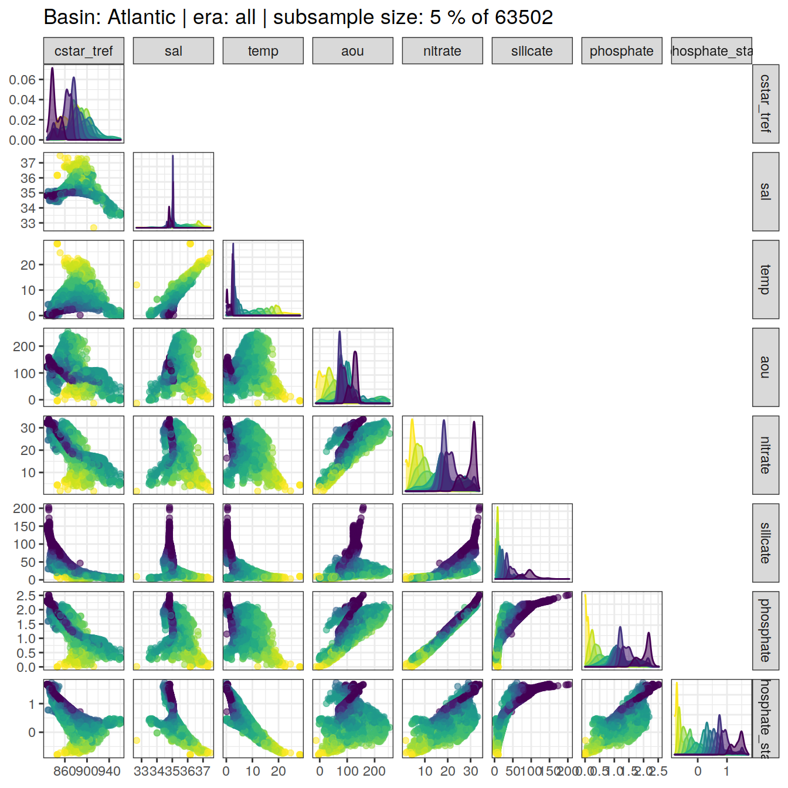
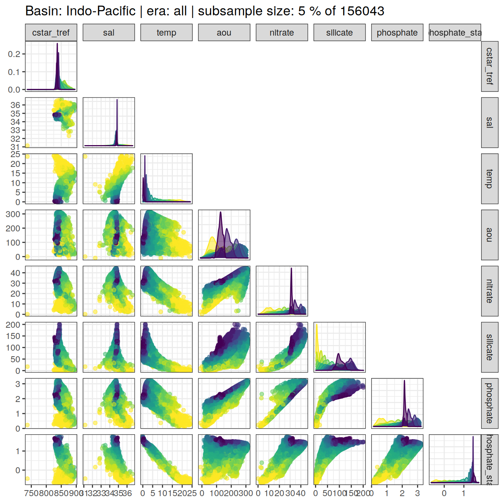
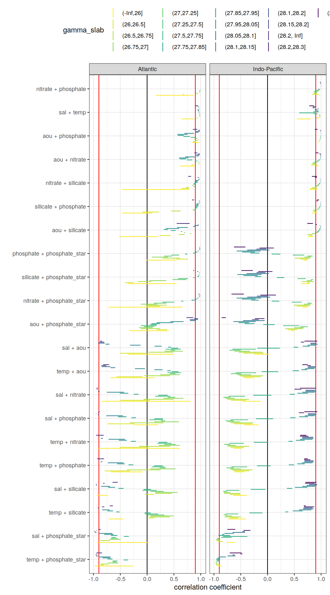
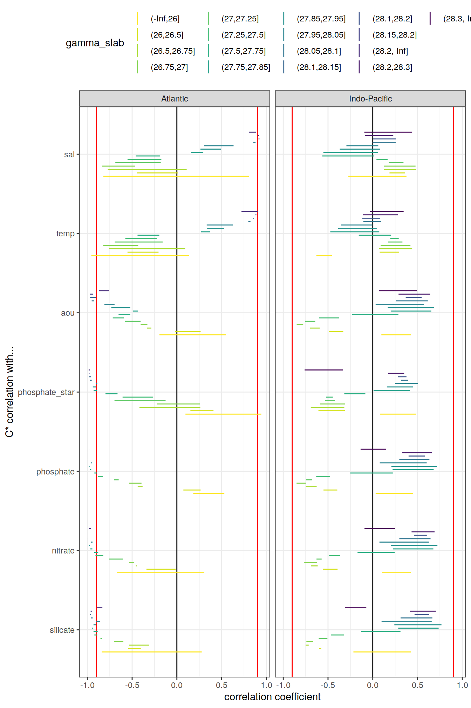

Last updated: 2021-06-06
Checks: 7 0
Knit directory: emlr_mod_v_XXX/
This reproducible R Markdown analysis was created with workflowr (version 1.6.2). The Checks tab describes the reproducibility checks that were applied when the results were created. The Past versions tab lists the development history.
Great! Since the R Markdown file has been committed to the Git repository, you know the exact version of the code that produced these results.
Great job! The global environment was empty. Objects defined in the global environment can affect the analysis in your R Markdown file in unknown ways. For reproduciblity it’s best to always run the code in an empty environment.
The command set.seed(20200707) was run prior to running the code in the R Markdown file. Setting a seed ensures that any results that rely on randomness, e.g. subsampling or permutations, are reproducible.
Great job! Recording the operating system, R version, and package versions is critical for reproducibility.
Nice! There were no cached chunks for this analysis, so you can be confident that you successfully produced the results during this run.
Great job! Using relative paths to the files within your workflowr project makes it easier to run your code on other machines.
Great! You are using Git for version control. Tracking code development and connecting the code version to the results is critical for reproducibility.
The results in this page were generated with repository version 0a2d9c1. See the Past versions tab to see a history of the changes made to the R Markdown and HTML files.
Note that you need to be careful to ensure that all relevant files for the analysis have been committed to Git prior to generating the results (you can use wflow_publish or wflow_git_commit). workflowr only checks the R Markdown file, but you know if there are other scripts or data files that it depends on. Below is the status of the Git repository when the results were generated:
Ignored files:
Ignored: .Rhistory
Ignored: .Rproj.user/
Unstaged changes:
Modified: data/auxillary/params_local.rds
Note that any generated files, e.g. HTML, png, CSS, etc., are not included in this status report because it is ok for generated content to have uncommitted changes.
These are the previous versions of the repository in which changes were made to the R Markdown (analysis/eMLR_assumption_testing.Rmd) and HTML (docs/eMLR_assumption_testing.html) files. If you’ve configured a remote Git repository (see ?wflow_git_remote), click on the hyperlinks in the table below to view the files as they were in that past version.
| File | Version | Author | Date | Message |
|---|---|---|---|---|
| html | dbe2a95 | Donghe-Zhu | 2021-05-28 | Build site. |
| html | d50b039 | Donghe-Zhu | 2021-05-28 | Build site. |
| html | 441ebe5 | Donghe-Zhu | 2021-05-28 | Build site. |
| html | 6262ad3 | Donghe-Zhu | 2021-05-28 | Build site. |
| html | a61aa77 | Donghe-Zhu | 2021-05-28 | Build site. |
| html | b8dbce4 | Donghe-Zhu | 2021-05-28 | Build site. |
| html | 94a833e | Donghe-Zhu | 2021-05-27 | Build site. |
| html | 5e0bd64 | Donghe-Zhu | 2021-05-27 | Build site. |
| html | af1eadd | Donghe-Zhu | 2021-05-27 | Build site. |
| html | 9179bfe | Donghe-Zhu | 2021-05-27 | Build site. |
| html | 28cbe5e | Donghe-Zhu | 2021-05-27 | Build site. |
| html | a618f02 | Donghe-Zhu | 2021-05-27 | Build site. |
| html | 4623e38 | Donghe-Zhu | 2021-05-27 | Build site. |
| html | b81bb49 | Donghe-Zhu | 2021-05-27 | Build site. |
| html | 951e188 | Donghe-Zhu | 2021-05-27 | Build site. |
| html | e377833 | Donghe-Zhu | 2021-05-26 | Build site. |
| html | 2705a04 | Donghe-Zhu | 2021-03-28 | Build site. |
| html | cd5f759 | Donghe-Zhu | 2021-03-28 | Build site. |
| html | 75dda4d | Donghe-Zhu | 2021-03-27 | Build site. |
| html | 0b19f6e | Donghe-Zhu | 2021-03-27 | Build site. |
| html | e2704ca | Donghe-Zhu | 2021-03-27 | Build site. |
| html | 3061a0b | Donghe-Zhu | 2021-03-27 | Build site. |
| html | b883157 | Donghe-Zhu | 2021-03-27 | Build site. |
| html | 0c20513 | Donghe-Zhu | 2021-03-26 | Build site. |
| html | d19654d | Donghe-Zhu | 2021-03-26 | Build site. |
| html | 6c53dbf | Donghe-Zhu | 2021-03-25 | Build site. |
| html | 1914a11 | Donghe-Zhu | 2021-03-24 | Build site. |
| html | 8be810e | Donghe-Zhu | 2021-03-23 | Build site. |
| html | bf19764 | Donghe-Zhu | 2021-03-22 | Build site. |
| html | 3ec9d3d | Donghe-Zhu | 2021-03-22 | Build site. |
| html | 134ace1 | Donghe-Zhu | 2021-03-22 | Build site. |
| html | f6d70a4 | Donghe-Zhu | 2021-03-22 | Build site. |
| html | 183443b | Donghe-Zhu | 2021-03-21 | Build site. |
| html | 2e6976b | Donghe-Zhu | 2021-03-21 | Build site. |
| html | 51a42bd | Donghe-Zhu | 2021-03-16 | Build site. |
| html | f745381 | Donghe-Zhu | 2021-03-16 | Build site. |
| html | aecbf75 | Donghe-Zhu | 2021-03-14 | Build site. |
| html | 1b2a0c2 | Donghe-Zhu | 2021-03-14 | Build site. |
| html | 6733e48 | Donghe-Zhu | 2021-03-12 | Build site. |
| html | ba71e6a | Donghe-Zhu | 2021-03-12 | Build site. |
| html | 9dbf5bd | Donghe-Zhu | 2021-03-11 | Build site. |
| html | a49df30 | Donghe-Zhu | 2021-03-11 | Build site. |
| html | b3348a5 | Donghe-Zhu | 2021-03-11 | Build site. |
| html | 1c24ff7 | Donghe-Zhu | 2021-03-10 | Build site. |
| html | 94ce5a8 | Donghe-Zhu | 2021-03-10 | Build site. |
| html | db33928 | Donghe-Zhu | 2021-03-10 | Build site. |
| html | 3d1f470 | Donghe-Zhu | 2021-03-10 | Build site. |
| html | 9b7bc66 | Donghe-Zhu | 2021-03-10 | Build site. |
| html | 4168b43 | Donghe-Zhu | 2021-03-10 | Build site. |
| html | 5365f80 | Donghe-Zhu | 2021-03-10 | Build site. |
| html | 2b6c392 | Donghe-Zhu | 2021-03-10 | Build site. |
| html | 9f58753 | Donghe-Zhu | 2021-03-10 | Build site. |
| html | f2a7146 | Donghe-Zhu | 2021-03-10 | Build site. |
| html | fd528ed | Donghe-Zhu | 2021-03-10 | Build site. |
| html | 9d5a62c | Donghe-Zhu | 2021-03-10 | Build site. |
| html | 5d1e70b | Donghe-Zhu | 2021-03-10 | Build site. |
| html | 2093979 | Donghe-Zhu | 2021-03-10 | Build site. |
| html | b865899 | Donghe-Zhu | 2021-03-10 | Build site. |
| html | cc2a956 | Donghe-Zhu | 2021-03-10 | Build site. |
| html | 60689fb | Donghe-Zhu | 2021-03-10 | Build site. |
| html | 9230b52 | Donghe-Zhu | 2021-03-10 | Build site. |
| html | dba33c8 | Donghe-Zhu | 2021-03-09 | Build site. |
| html | 17f1c4a | Donghe-Zhu | 2021-03-09 | Build site. |
| html | c024d1a | Donghe-Zhu | 2021-03-09 | Build site. |
| html | 02f7242 | Donghe-Zhu | 2021-03-09 | Build site. |
| html | 6f50bc6 | Donghe-Zhu | 2021-03-09 | Build site. |
| html | 1691156 | Donghe-Zhu | 2021-03-08 | Build site. |
| html | c0ceaf8 | Donghe-Zhu | 2021-03-08 | Build site. |
| html | 058e0a1 | Donghe-Zhu | 2021-03-08 | Build site. |
| html | 112dea0 | Donghe-Zhu | 2021-03-08 | Build site. |
| html | 1843412 | Donghe-Zhu | 2021-03-08 | Build site. |
| html | 65b0cef | Donghe-Zhu | 2021-03-07 | Build site. |
| html | 4083a6c | Donghe-Zhu | 2021-03-07 | Build site. |
| html | 3fbbfa4 | Donghe-Zhu | 2021-03-07 | Build site. |
| html | 627c8fb | Donghe-Zhu | 2021-03-07 | Build site. |
| html | 3607f4d | Donghe-Zhu | 2021-03-07 | Build site. |
| html | 9ef3222 | Donghe-Zhu | 2021-03-05 | Build site. |
| html | 8c1e978 | Donghe-Zhu | 2021-03-05 | Build site. |
| html | 865f68c | Donghe-Zhu | 2021-03-05 | Build site. |
| html | ee69bc1 | Donghe-Zhu | 2021-03-05 | Build site. |
| html | a79291f | Donghe-Zhu | 2021-03-05 | Build site. |
| html | e8c6f30 | Donghe-Zhu | 2021-03-04 | Build site. |
| html | 59288fe | Donghe-Zhu | 2021-03-04 | Build site. |
| html | 731abc8 | Donghe-Zhu | 2021-03-04 | Build site. |
| html | e2a5a33 | Donghe-Zhu | 2021-03-04 | Build site. |
| html | c7892c1 | Donghe-Zhu | 2021-03-04 | Build site. |
| html | 924430b | Donghe-Zhu | 2021-03-03 | Build site. |
| html | 0d0bca1 | Donghe-Zhu | 2021-03-03 | Build site. |
| html | cb63c16 | Donghe-Zhu | 2021-03-03 | Build site. |
| html | ffda45a | Donghe-Zhu | 2021-03-03 | Build site. |
| html | 691ba81 | Donghe-Zhu | 2021-03-03 | Build site. |
| html | c5e45a2 | Donghe-Zhu | 2021-03-03 | Build site. |
| html | 89c3e58 | Donghe-Zhu | 2021-03-03 | Build site. |
| html | c407a50 | Donghe-Zhu | 2021-03-03 | Build site. |
| html | c911669 | Donghe-Zhu | 2021-03-03 | Build site. |
| html | b71c719 | Donghe-Zhu | 2021-03-01 | Build site. |
| html | 13666ca | Donghe-Zhu | 2021-03-01 | Build site. |
| html | c6e60fe | Donghe-Zhu | 2021-03-01 | Build site. |
| html | 7a388f7 | Donghe-Zhu | 2021-03-01 | Build site. |
| html | 799e913 | Donghe-Zhu | 2021-03-01 | Build site. |
| html | 66ff99f | Donghe-Zhu | 2021-03-01 | Build site. |
| html | ac9bb7a | Donghe-Zhu | 2021-02-28 | Build site. |
| html | efdc047 | Donghe-Zhu | 2021-02-28 | Build site. |
| html | e9a7418 | Donghe-Zhu | 2021-02-28 | Build site. |
| html | e152917 | Donghe-Zhu | 2021-02-28 | Build site. |
| html | feb991c | Donghe-Zhu | 2021-02-27 | Build site. |
| html | 287123c | Donghe-Zhu | 2021-02-27 | Build site. |
| html | 54d5b5b | Donghe-Zhu | 2021-02-27 | Build site. |
| html | 330f064 | Donghe-Zhu | 2021-02-27 | Build site. |
| html | adbc9bc | Donghe-Zhu | 2021-02-27 | Build site. |
| html | 5937141 | Donghe-Zhu | 2021-02-27 | Build site. |
| html | 4414bbf | Donghe-Zhu | 2021-02-27 | Build site. |
| html | a265efb | Donghe-Zhu | 2021-02-27 | Build site. |
| html | 19edd1e | Donghe-Zhu | 2021-02-27 | Build site. |
| html | f20483f | Donghe-Zhu | 2021-02-26 | Build site. |
| html | 6a2c7b3 | Donghe-Zhu | 2021-02-25 | Build site. |
| html | 02b976d | Donghe-Zhu | 2021-02-24 | Build site. |
| html | 354c224 | Donghe-Zhu | 2021-02-24 | Build site. |
| html | 1a0a88a | Donghe-Zhu | 2021-02-24 | Build site. |
| html | 57f701e | Donghe-Zhu | 2021-02-24 | Build site. |
| html | 06f3149 | Donghe-Zhu | 2021-02-16 | Build site. |
| html | 401eab3 | Donghe-Zhu | 2021-02-15 | Build site. |
| html | e3bba84 | Donghe-Zhu | 2021-02-15 | Build site. |
| html | 5dce4b1 | Donghe-Zhu | 2021-02-15 | Build site. |
| html | 4469a0c | Donghe-Zhu | 2021-02-13 | Build site. |
| html | 5ae6a69 | Donghe-Zhu | 2021-02-10 | Build site. |
| html | 05385dc | Donghe-Zhu | 2021-02-10 | Build site. |
| html | f791ae4 | Donghe-Zhu | 2021-02-09 | Build site. |
| html | f71ae34 | Donghe-Zhu | 2021-02-09 | Build site. |
| html | c011832 | Donghe-Zhu | 2021-02-09 | Build site. |
| html | a145fa7 | Donghe-Zhu | 2021-02-09 | Build site. |
| html | c344e42 | Donghe-Zhu | 2021-02-08 | Build site. |
| html | 2f095d7 | Donghe-Zhu | 2021-02-07 | Build site. |
| html | 2305044 | Donghe-Zhu | 2021-02-07 | Build site. |
| html | 1fad5f1 | Donghe-Zhu | 2021-02-07 | Build site. |
| html | ca03c39 | Donghe-Zhu | 2021-02-07 | Build site. |
| html | e2ffc14 | Donghe-Zhu | 2021-02-05 | Build site. |
| Rmd | 55cdfe6 | Donghe-Zhu | 2021-02-05 | local rebuild |
| html | cd7c52c | Donghe-Zhu | 2021-02-04 | Build site. |
| html | bcf84f4 | Donghe-Zhu | 2021-02-02 | Build site. |
| html | a518739 | Donghe-Zhu | 2021-02-01 | Build site. |
| html | 61666de | Donghe-Zhu | 2021-01-31 | Build site. |
| html | 865b582 | Donghe-Zhu | 2021-01-31 | Build site. |
| html | 3e68089 | Donghe-Zhu | 2021-01-31 | Build site. |
| html | ecf335c | Donghe-Zhu | 2021-01-31 | Build site. |
| html | a618965 | Donghe-Zhu | 2021-01-31 | Build site. |
| html | 59e006e | Donghe-Zhu | 2021-01-31 | Build site. |
| html | a1c8f87 | Donghe-Zhu | 2021-01-31 | Build site. |
| html | ae5c18f | Donghe-Zhu | 2021-01-31 | Build site. |
| html | b50fe52 | Donghe-Zhu | 2021-01-31 | Build site. |
| html | ac99ae5 | jens-daniel-mueller | 2021-01-29 | code review |
| html | b5bdcaf | Donghe-Zhu | 2021-01-29 | Build site. |
| html | 442010d | Donghe-Zhu | 2021-01-29 | Build site. |
| html | 372adf5 | Donghe-Zhu | 2021-01-29 | Build site. |
| html | af8788e | Donghe-Zhu | 2021-01-29 | Build site. |
| html | 21c91c9 | Donghe-Zhu | 2021-01-29 | Build site. |
| html | eded038 | Donghe-Zhu | 2021-01-29 | Build site. |
| html | 541d4dd | Donghe-Zhu | 2021-01-29 | Build site. |
| html | 6a75576 | Donghe-Zhu | 2021-01-28 | Build site. |
| html | 16fba40 | Donghe-Zhu | 2021-01-28 | Build site. |
| html | 12bc567 | Donghe-Zhu | 2021-01-27 | Build site. |
| html | ceed31b | Donghe-Zhu | 2021-01-27 | Build site. |
| html | 342402d | Donghe-Zhu | 2021-01-27 | Build site. |
| html | 5bad5c2 | Donghe-Zhu | 2021-01-27 | Build site. |
| html | 61efb56 | Donghe-Zhu | 2021-01-25 | Build site. |
| html | 48f638e | Donghe-Zhu | 2021-01-25 | Build site. |
| html | c1cec47 | Donghe-Zhu | 2021-01-25 | Build site. |
| html | 05ffb0c | Donghe-Zhu | 2021-01-25 | Build site. |
| html | 8b97165 | Donghe-Zhu | 2021-01-25 | Build site. |
| html | c569946 | Donghe-Zhu | 2021-01-24 | Build site. |
| html | a2f0d56 | Donghe-Zhu | 2021-01-23 | Build site. |
| html | 28509fc | Donghe-Zhu | 2021-01-23 | Build site. |
| html | 4c28e4a | Donghe-Zhu | 2021-01-22 | Build site. |
| html | 24cc264 | jens-daniel-mueller | 2021-01-22 | cleaned /docs before creating copies |
| html | 88eb28f | Donghe-Zhu | 2021-01-21 | Build site. |
| html | 2679490 | Donghe-Zhu | 2021-01-21 | Build site. |
| html | 7891955 | Donghe-Zhu | 2021-01-21 | Build site. |
| html | d4cf1cb | Donghe-Zhu | 2021-01-21 | Build site. |
| html | 1f3e5b6 | jens-daniel-mueller | 2021-01-20 | Build site. |
| html | 0e7bdf1 | jens-daniel-mueller | 2021-01-15 | cleaning template repository |
| html | 73cbef3 | jens-daniel-mueller | 2021-01-15 | Build site. |
| html | 4571843 | jens-daniel-mueller | 2021-01-14 | revision and html deleted for template copying |
| html | 23151cd | jens-daniel-mueller | 2021-01-14 | Build site. |
| html | b3564aa | jens-daniel-mueller | 2021-01-14 | Build site. |
| html | 8d032c3 | jens-daniel-mueller | 2021-01-14 | Build site. |
| html | 022871c | Donghe-Zhu | 2021-01-13 | Build site. |
| Rmd | d44f36f | Donghe-Zhu | 2021-01-13 | reorder analysis final |
| html | 17dee1d | jens-daniel-mueller | 2021-01-13 | Build site. |
| html | a076226 | Donghe-Zhu | 2021-01-11 | Build site. |
| Rmd | 52eff18 | Donghe-Zhu | 2021-01-09 | Implemet model_run and subsetting |
| html | 7cdea0c | jens-daniel-mueller | 2021-01-06 | Build site. |
| html | fa85b93 | jens-daniel-mueller | 2021-01-06 | Build site. |
| html | e5cb81a | Donghe-Zhu | 2021-01-05 | Build site. |
| html | a499f10 | Donghe-Zhu | 2021-01-05 | Build site. |
| Rmd | 715bdb4 | Donghe-Zhu | 2021-01-02 | model modification |
| html | fb8a752 | Donghe-Zhu | 2020-12-23 | Build site. |
| Rmd | 82e3c9c | Donghe-Zhu | 2020-12-23 | first build after creating model template |
| html | 8fae0b2 | Donghe-Zhu | 2020-12-21 | Build site. |
| html | c8b76b3 | jens-daniel-mueller | 2020-12-19 | Build site. |
| Rmd | b5fedce | jens-daniel-mueller | 2020-12-19 | first build after creating model template |
| Rmd | 8e8abf5 | Jens Müller | 2020-12-18 | Initial commit |
Required are:
GLODAP <-
read_csv(paste(path_version_data,
"GLODAPv2.2020_MLR_fitting_ready.csv",
sep = ""))The correlation between:
were investigated based on:
For an overview, a random subset of data from all eras was plotted separately for both basins, with color indicating neutral density slabs (high density = dark-purple color).
for (i_basin in unique(GLODAP$basin)) {
# i_basin <- unique(GLODAP$basin)[1]
print(
GLODAP %>%
filter(basin == i_basin) %>%
sample_frac(0.05) %>%
ggpairs(columns = c(params_local$MLR_target,
params_local$MLR_predictors),
upper = "blank",
ggplot2::aes(col = gamma_slab, fill = gamma_slab, alpha = 0.01)) +
scale_fill_viridis_d(direction = -1) +
scale_color_viridis_d(direction = -1) +
labs(title = paste("Basin:", i_basin ,"| era: all | subsample size: 5 % of",
nrow(GLODAP %>% filter(basin == i_basin))))
)
}
| Version | Author | Date |
|---|---|---|
| dbe2a95 | Donghe-Zhu | 2021-05-28 |
| d50b039 | Donghe-Zhu | 2021-05-28 |
| 441ebe5 | Donghe-Zhu | 2021-05-28 |
| 6262ad3 | Donghe-Zhu | 2021-05-28 |
| a61aa77 | Donghe-Zhu | 2021-05-28 |
| b8dbce4 | Donghe-Zhu | 2021-05-28 |
| 94a833e | Donghe-Zhu | 2021-05-27 |
| 5e0bd64 | Donghe-Zhu | 2021-05-27 |
| af1eadd | Donghe-Zhu | 2021-05-27 |
| 9179bfe | Donghe-Zhu | 2021-05-27 |
| 28cbe5e | Donghe-Zhu | 2021-05-27 |
| a618f02 | Donghe-Zhu | 2021-05-27 |
| 4623e38 | Donghe-Zhu | 2021-05-27 |
| b81bb49 | Donghe-Zhu | 2021-05-27 |
| 951e188 | Donghe-Zhu | 2021-05-27 |
| e377833 | Donghe-Zhu | 2021-05-26 |
| 2705a04 | Donghe-Zhu | 2021-03-28 |
| cd5f759 | Donghe-Zhu | 2021-03-28 |
| 75dda4d | Donghe-Zhu | 2021-03-27 |
| 0b19f6e | Donghe-Zhu | 2021-03-27 |
| e2704ca | Donghe-Zhu | 2021-03-27 |
| 3061a0b | Donghe-Zhu | 2021-03-27 |
| b883157 | Donghe-Zhu | 2021-03-27 |
| d19654d | Donghe-Zhu | 2021-03-26 |
| 1914a11 | Donghe-Zhu | 2021-03-24 |
| 8be810e | Donghe-Zhu | 2021-03-23 |
| bf19764 | Donghe-Zhu | 2021-03-22 |
| 3ec9d3d | Donghe-Zhu | 2021-03-22 |
| 134ace1 | Donghe-Zhu | 2021-03-22 |
| f6d70a4 | Donghe-Zhu | 2021-03-22 |
| 183443b | Donghe-Zhu | 2021-03-21 |
| 2e6976b | Donghe-Zhu | 2021-03-21 |
| 51a42bd | Donghe-Zhu | 2021-03-16 |
| f745381 | Donghe-Zhu | 2021-03-16 |
| aecbf75 | Donghe-Zhu | 2021-03-14 |
| 1b2a0c2 | Donghe-Zhu | 2021-03-14 |
| 6733e48 | Donghe-Zhu | 2021-03-12 |
| ba71e6a | Donghe-Zhu | 2021-03-12 |
| 9dbf5bd | Donghe-Zhu | 2021-03-11 |
| a49df30 | Donghe-Zhu | 2021-03-11 |
| b3348a5 | Donghe-Zhu | 2021-03-11 |
| 1c24ff7 | Donghe-Zhu | 2021-03-10 |
| 94ce5a8 | Donghe-Zhu | 2021-03-10 |
| db33928 | Donghe-Zhu | 2021-03-10 |
| 3d1f470 | Donghe-Zhu | 2021-03-10 |
| 9b7bc66 | Donghe-Zhu | 2021-03-10 |
| 5365f80 | Donghe-Zhu | 2021-03-10 |
| 2b6c392 | Donghe-Zhu | 2021-03-10 |
| 9f58753 | Donghe-Zhu | 2021-03-10 |
| 9d5a62c | Donghe-Zhu | 2021-03-10 |
| 5d1e70b | Donghe-Zhu | 2021-03-10 |
| 2093979 | Donghe-Zhu | 2021-03-10 |
| cc2a956 | Donghe-Zhu | 2021-03-10 |
| 17f1c4a | Donghe-Zhu | 2021-03-09 |
| 02f7242 | Donghe-Zhu | 2021-03-09 |
| 1691156 | Donghe-Zhu | 2021-03-08 |
| c0ceaf8 | Donghe-Zhu | 2021-03-08 |
| 112dea0 | Donghe-Zhu | 2021-03-08 |
| 1843412 | Donghe-Zhu | 2021-03-08 |
| 3fbbfa4 | Donghe-Zhu | 2021-03-07 |
| 627c8fb | Donghe-Zhu | 2021-03-07 |
| 8c1e978 | Donghe-Zhu | 2021-03-05 |
| 865f68c | Donghe-Zhu | 2021-03-05 |
| ee69bc1 | Donghe-Zhu | 2021-03-05 |
| a79291f | Donghe-Zhu | 2021-03-05 |
| e8c6f30 | Donghe-Zhu | 2021-03-04 |
| 59288fe | Donghe-Zhu | 2021-03-04 |
| 731abc8 | Donghe-Zhu | 2021-03-04 |
| e2a5a33 | Donghe-Zhu | 2021-03-04 |
| c7892c1 | Donghe-Zhu | 2021-03-04 |
| 924430b | Donghe-Zhu | 2021-03-03 |
| 0d0bca1 | Donghe-Zhu | 2021-03-03 |
| cb63c16 | Donghe-Zhu | 2021-03-03 |
| ffda45a | Donghe-Zhu | 2021-03-03 |
| 691ba81 | Donghe-Zhu | 2021-03-03 |
| c5e45a2 | Donghe-Zhu | 2021-03-03 |
| 89c3e58 | Donghe-Zhu | 2021-03-03 |
| c911669 | Donghe-Zhu | 2021-03-03 |
| 13666ca | Donghe-Zhu | 2021-03-01 |
| 7a388f7 | Donghe-Zhu | 2021-03-01 |
| 799e913 | Donghe-Zhu | 2021-03-01 |
| 66ff99f | Donghe-Zhu | 2021-03-01 |
| ac9bb7a | Donghe-Zhu | 2021-02-28 |
| efdc047 | Donghe-Zhu | 2021-02-28 |
| e9a7418 | Donghe-Zhu | 2021-02-28 |
| 54d5b5b | Donghe-Zhu | 2021-02-27 |
| 330f064 | Donghe-Zhu | 2021-02-27 |
| 5937141 | Donghe-Zhu | 2021-02-27 |
| 4414bbf | Donghe-Zhu | 2021-02-27 |
| a265efb | Donghe-Zhu | 2021-02-27 |
| 19edd1e | Donghe-Zhu | 2021-02-27 |
| f20483f | Donghe-Zhu | 2021-02-26 |
| 6a2c7b3 | Donghe-Zhu | 2021-02-25 |
| 354c224 | Donghe-Zhu | 2021-02-24 |
| 1a0a88a | Donghe-Zhu | 2021-02-24 |
| 57f701e | Donghe-Zhu | 2021-02-24 |
| 06f3149 | Donghe-Zhu | 2021-02-16 |
| 5dce4b1 | Donghe-Zhu | 2021-02-15 |
| 4469a0c | Donghe-Zhu | 2021-02-13 |
| 5ae6a69 | Donghe-Zhu | 2021-02-10 |
| 05385dc | Donghe-Zhu | 2021-02-10 |
| f791ae4 | Donghe-Zhu | 2021-02-09 |
| f71ae34 | Donghe-Zhu | 2021-02-09 |
| a145fa7 | Donghe-Zhu | 2021-02-09 |
| c344e42 | Donghe-Zhu | 2021-02-08 |
| 1fad5f1 | Donghe-Zhu | 2021-02-07 |
| ca03c39 | Donghe-Zhu | 2021-02-07 |
| cd7c52c | Donghe-Zhu | 2021-02-04 |
| bcf84f4 | Donghe-Zhu | 2021-02-02 |
| 865b582 | Donghe-Zhu | 2021-01-31 |
| 3e68089 | Donghe-Zhu | 2021-01-31 |
| ecf335c | Donghe-Zhu | 2021-01-31 |
| a618965 | Donghe-Zhu | 2021-01-31 |
| 59e006e | Donghe-Zhu | 2021-01-31 |
| a1c8f87 | Donghe-Zhu | 2021-01-31 |
| b50fe52 | Donghe-Zhu | 2021-01-31 |
| ac99ae5 | jens-daniel-mueller | 2021-01-29 |
| b5bdcaf | Donghe-Zhu | 2021-01-29 |
| 372adf5 | Donghe-Zhu | 2021-01-29 |
| af8788e | Donghe-Zhu | 2021-01-29 |
| 21c91c9 | Donghe-Zhu | 2021-01-29 |
| eded038 | Donghe-Zhu | 2021-01-29 |
| 541d4dd | Donghe-Zhu | 2021-01-29 |
| 6a75576 | Donghe-Zhu | 2021-01-28 |
| 16fba40 | Donghe-Zhu | 2021-01-28 |
| 12bc567 | Donghe-Zhu | 2021-01-27 |
| ceed31b | Donghe-Zhu | 2021-01-27 |
| 342402d | Donghe-Zhu | 2021-01-27 |
| 5bad5c2 | Donghe-Zhu | 2021-01-27 |
| 61efb56 | Donghe-Zhu | 2021-01-25 |
| 48f638e | Donghe-Zhu | 2021-01-25 |
| c1cec47 | Donghe-Zhu | 2021-01-25 |
| 05ffb0c | Donghe-Zhu | 2021-01-25 |
| 8b97165 | Donghe-Zhu | 2021-01-25 |
| c569946 | Donghe-Zhu | 2021-01-24 |
| a2f0d56 | Donghe-Zhu | 2021-01-23 |
| 28509fc | Donghe-Zhu | 2021-01-23 |
| 4c28e4a | Donghe-Zhu | 2021-01-22 |
| 24cc264 | jens-daniel-mueller | 2021-01-22 |
| 7891955 | Donghe-Zhu | 2021-01-21 |
| d4cf1cb | Donghe-Zhu | 2021-01-21 |
| 1f3e5b6 | jens-daniel-mueller | 2021-01-20 |
| 0e7bdf1 | jens-daniel-mueller | 2021-01-15 |
| 4571843 | jens-daniel-mueller | 2021-01-14 |
| b3564aa | jens-daniel-mueller | 2021-01-14 |
| 8d032c3 | jens-daniel-mueller | 2021-01-14 |
| 17dee1d | jens-daniel-mueller | 2021-01-13 |
| 7cdea0c | jens-daniel-mueller | 2021-01-06 |
| fa85b93 | jens-daniel-mueller | 2021-01-06 |
| e5cb81a | Donghe-Zhu | 2021-01-05 |
| a499f10 | Donghe-Zhu | 2021-01-05 |
| fb8a752 | Donghe-Zhu | 2020-12-23 |
| 8fae0b2 | Donghe-Zhu | 2020-12-21 |
| c8b76b3 | jens-daniel-mueller | 2020-12-19 |

| Version | Author | Date |
|---|---|---|
| dbe2a95 | Donghe-Zhu | 2021-05-28 |
| d50b039 | Donghe-Zhu | 2021-05-28 |
| 441ebe5 | Donghe-Zhu | 2021-05-28 |
| 6262ad3 | Donghe-Zhu | 2021-05-28 |
| a61aa77 | Donghe-Zhu | 2021-05-28 |
| b8dbce4 | Donghe-Zhu | 2021-05-28 |
| 94a833e | Donghe-Zhu | 2021-05-27 |
| 5e0bd64 | Donghe-Zhu | 2021-05-27 |
| af1eadd | Donghe-Zhu | 2021-05-27 |
| 9179bfe | Donghe-Zhu | 2021-05-27 |
| 28cbe5e | Donghe-Zhu | 2021-05-27 |
| a618f02 | Donghe-Zhu | 2021-05-27 |
| 4623e38 | Donghe-Zhu | 2021-05-27 |
| b81bb49 | Donghe-Zhu | 2021-05-27 |
| 951e188 | Donghe-Zhu | 2021-05-27 |
| e377833 | Donghe-Zhu | 2021-05-26 |
| 2705a04 | Donghe-Zhu | 2021-03-28 |
| cd5f759 | Donghe-Zhu | 2021-03-28 |
| 75dda4d | Donghe-Zhu | 2021-03-27 |
| 0b19f6e | Donghe-Zhu | 2021-03-27 |
| e2704ca | Donghe-Zhu | 2021-03-27 |
| 3061a0b | Donghe-Zhu | 2021-03-27 |
| b883157 | Donghe-Zhu | 2021-03-27 |
| d19654d | Donghe-Zhu | 2021-03-26 |
| 1914a11 | Donghe-Zhu | 2021-03-24 |
| 8be810e | Donghe-Zhu | 2021-03-23 |
| bf19764 | Donghe-Zhu | 2021-03-22 |
| 3ec9d3d | Donghe-Zhu | 2021-03-22 |
| 134ace1 | Donghe-Zhu | 2021-03-22 |
| f6d70a4 | Donghe-Zhu | 2021-03-22 |
| 183443b | Donghe-Zhu | 2021-03-21 |
| 2e6976b | Donghe-Zhu | 2021-03-21 |
| 51a42bd | Donghe-Zhu | 2021-03-16 |
| f745381 | Donghe-Zhu | 2021-03-16 |
| aecbf75 | Donghe-Zhu | 2021-03-14 |
| 1b2a0c2 | Donghe-Zhu | 2021-03-14 |
| 6733e48 | Donghe-Zhu | 2021-03-12 |
| ba71e6a | Donghe-Zhu | 2021-03-12 |
| 9dbf5bd | Donghe-Zhu | 2021-03-11 |
| a49df30 | Donghe-Zhu | 2021-03-11 |
| b3348a5 | Donghe-Zhu | 2021-03-11 |
| 1c24ff7 | Donghe-Zhu | 2021-03-10 |
| 94ce5a8 | Donghe-Zhu | 2021-03-10 |
| db33928 | Donghe-Zhu | 2021-03-10 |
| 3d1f470 | Donghe-Zhu | 2021-03-10 |
| 9b7bc66 | Donghe-Zhu | 2021-03-10 |
| 5365f80 | Donghe-Zhu | 2021-03-10 |
| 9d5a62c | Donghe-Zhu | 2021-03-10 |
| 5d1e70b | Donghe-Zhu | 2021-03-10 |
| 2093979 | Donghe-Zhu | 2021-03-10 |
| cc2a956 | Donghe-Zhu | 2021-03-10 |
| 17f1c4a | Donghe-Zhu | 2021-03-09 |
| 02f7242 | Donghe-Zhu | 2021-03-09 |
| 1691156 | Donghe-Zhu | 2021-03-08 |
| c0ceaf8 | Donghe-Zhu | 2021-03-08 |
| 058e0a1 | Donghe-Zhu | 2021-03-08 |
| 112dea0 | Donghe-Zhu | 2021-03-08 |
| 1843412 | Donghe-Zhu | 2021-03-08 |
| 3fbbfa4 | Donghe-Zhu | 2021-03-07 |
| 627c8fb | Donghe-Zhu | 2021-03-07 |
| 8c1e978 | Donghe-Zhu | 2021-03-05 |
| 865f68c | Donghe-Zhu | 2021-03-05 |
| ee69bc1 | Donghe-Zhu | 2021-03-05 |
| a79291f | Donghe-Zhu | 2021-03-05 |
| e8c6f30 | Donghe-Zhu | 2021-03-04 |
| 59288fe | Donghe-Zhu | 2021-03-04 |
| 731abc8 | Donghe-Zhu | 2021-03-04 |
| e2a5a33 | Donghe-Zhu | 2021-03-04 |
| c7892c1 | Donghe-Zhu | 2021-03-04 |
| 924430b | Donghe-Zhu | 2021-03-03 |
| 0d0bca1 | Donghe-Zhu | 2021-03-03 |
| cb63c16 | Donghe-Zhu | 2021-03-03 |
| 691ba81 | Donghe-Zhu | 2021-03-03 |
| c5e45a2 | Donghe-Zhu | 2021-03-03 |
| 89c3e58 | Donghe-Zhu | 2021-03-03 |
| c911669 | Donghe-Zhu | 2021-03-03 |
| 13666ca | Donghe-Zhu | 2021-03-01 |
| 7a388f7 | Donghe-Zhu | 2021-03-01 |
| 799e913 | Donghe-Zhu | 2021-03-01 |
| 66ff99f | Donghe-Zhu | 2021-03-01 |
| ac9bb7a | Donghe-Zhu | 2021-02-28 |
| efdc047 | Donghe-Zhu | 2021-02-28 |
| e9a7418 | Donghe-Zhu | 2021-02-28 |
| 54d5b5b | Donghe-Zhu | 2021-02-27 |
| 330f064 | Donghe-Zhu | 2021-02-27 |
| 5937141 | Donghe-Zhu | 2021-02-27 |
| 4414bbf | Donghe-Zhu | 2021-02-27 |
| a265efb | Donghe-Zhu | 2021-02-27 |
| 19edd1e | Donghe-Zhu | 2021-02-27 |
| f20483f | Donghe-Zhu | 2021-02-26 |
| 6a2c7b3 | Donghe-Zhu | 2021-02-25 |
| 354c224 | Donghe-Zhu | 2021-02-24 |
| 1a0a88a | Donghe-Zhu | 2021-02-24 |
| 57f701e | Donghe-Zhu | 2021-02-24 |
| 06f3149 | Donghe-Zhu | 2021-02-16 |
| 5dce4b1 | Donghe-Zhu | 2021-02-15 |
| 4469a0c | Donghe-Zhu | 2021-02-13 |
| 5ae6a69 | Donghe-Zhu | 2021-02-10 |
| 05385dc | Donghe-Zhu | 2021-02-10 |
| f791ae4 | Donghe-Zhu | 2021-02-09 |
| f71ae34 | Donghe-Zhu | 2021-02-09 |
| a145fa7 | Donghe-Zhu | 2021-02-09 |
| c344e42 | Donghe-Zhu | 2021-02-08 |
| 1fad5f1 | Donghe-Zhu | 2021-02-07 |
| ca03c39 | Donghe-Zhu | 2021-02-07 |
| cd7c52c | Donghe-Zhu | 2021-02-04 |
| bcf84f4 | Donghe-Zhu | 2021-02-02 |
| 865b582 | Donghe-Zhu | 2021-01-31 |
| 3e68089 | Donghe-Zhu | 2021-01-31 |
| ecf335c | Donghe-Zhu | 2021-01-31 |
| a618965 | Donghe-Zhu | 2021-01-31 |
| 59e006e | Donghe-Zhu | 2021-01-31 |
| a1c8f87 | Donghe-Zhu | 2021-01-31 |
| ae5c18f | Donghe-Zhu | 2021-01-31 |
| b50fe52 | Donghe-Zhu | 2021-01-31 |
| ac99ae5 | jens-daniel-mueller | 2021-01-29 |
| b5bdcaf | Donghe-Zhu | 2021-01-29 |
| 372adf5 | Donghe-Zhu | 2021-01-29 |
| af8788e | Donghe-Zhu | 2021-01-29 |
| 21c91c9 | Donghe-Zhu | 2021-01-29 |
| eded038 | Donghe-Zhu | 2021-01-29 |
| 541d4dd | Donghe-Zhu | 2021-01-29 |
| 6a75576 | Donghe-Zhu | 2021-01-28 |
| 16fba40 | Donghe-Zhu | 2021-01-28 |
| 12bc567 | Donghe-Zhu | 2021-01-27 |
| ceed31b | Donghe-Zhu | 2021-01-27 |
| 342402d | Donghe-Zhu | 2021-01-27 |
| 5bad5c2 | Donghe-Zhu | 2021-01-27 |
| 61efb56 | Donghe-Zhu | 2021-01-25 |
| 48f638e | Donghe-Zhu | 2021-01-25 |
| c1cec47 | Donghe-Zhu | 2021-01-25 |
| 05ffb0c | Donghe-Zhu | 2021-01-25 |
| 8b97165 | Donghe-Zhu | 2021-01-25 |
| c569946 | Donghe-Zhu | 2021-01-24 |
| a2f0d56 | Donghe-Zhu | 2021-01-23 |
| 28509fc | Donghe-Zhu | 2021-01-23 |
| 4c28e4a | Donghe-Zhu | 2021-01-22 |
| 24cc264 | jens-daniel-mueller | 2021-01-22 |
| 7891955 | Donghe-Zhu | 2021-01-21 |
| d4cf1cb | Donghe-Zhu | 2021-01-21 |
| 1f3e5b6 | jens-daniel-mueller | 2021-01-20 |
| 0e7bdf1 | jens-daniel-mueller | 2021-01-15 |
| 4571843 | jens-daniel-mueller | 2021-01-14 |
| b3564aa | jens-daniel-mueller | 2021-01-14 |
| 8d032c3 | jens-daniel-mueller | 2021-01-14 |
| 17dee1d | jens-daniel-mueller | 2021-01-13 |
| 7cdea0c | jens-daniel-mueller | 2021-01-06 |
| fa85b93 | jens-daniel-mueller | 2021-01-06 |
| e5cb81a | Donghe-Zhu | 2021-01-05 |
| a499f10 | Donghe-Zhu | 2021-01-05 |
| fb8a752 | Donghe-Zhu | 2020-12-23 |
| 8fae0b2 | Donghe-Zhu | 2020-12-21 |
| c8b76b3 | jens-daniel-mueller | 2020-12-19 |
Individual correlation plots for each basin, era and neutral density (gamma) slab are available at:
/nfs/kryo/work/jenmueller/emlr_cant/model/v_XXX/figures/Observations_correlation/
if (params_local$plot_all_figures == "y") {
for (i_basin in unique(GLODAP$basin)) {
for (i_era in unique(GLODAP$era)) {
#i_basin <- unique(GLODAP$basin)[1]
#i_era <- unique(GLODAP$era)[1]
GLODAP_basin_era <- GLODAP %>%
filter(basin == i_basin,
era == i_era)
for (i_gamma_slab in unique(GLODAP_basin_era$gamma_slab)) {
#i_gamma_slab <- unique(GLODAP_basin_era$gamma_slab)[14]
GLODAP_basin_era_slab <- GLODAP_basin_era %>%
filter(gamma_slab == i_gamma_slab)
if (nrow(GLODAP_basin_era_slab) > 2) {
GLODAP_highlight <- GLODAP_basin_era %>%
mutate(gamma_highlight = if_else(gamma_slab == i_gamma_slab,
"in", "out")) %>%
arrange(desc(gamma_highlight))
p <- GLODAP_highlight %>%
ggpairs(
columns = c(
params_local$MLR_target,
params_local$MLR_predictors
),
ggplot2::aes(
col = gamma_highlight,
fill = gamma_highlight,
alpha = 0.01
)
) +
scale_fill_manual(values = c("red", "grey")) +
scale_color_manual(values = c("red", "grey")) +
labs(
title = paste(
i_era,
"|",
i_basin,
"| Gamma slab",
i_gamma_slab,
"| # obs total",
nrow(GLODAP_basin_era),
"| # obs slab",
nrow(GLODAP_highlight %>%
filter(gamma_highlight == "in"))
)
)
png(
filename = paste(
path_version_figures,
"Observations_correlation/",
paste(
"Predictor_correlation",
i_era,
i_basin,
i_gamma_slab,
".png",
sep = "_"
),
sep = ""
),
width = 12,
height = 12,
units = "in",
res = 300
)
print(p)
dev.off()
}
}
}
}
rm(GLODAP_basin_era, GLODAP_basin_era_slab)
}Correlation coefficients were calculated individually within each slabs, era and basin.
for (i_basin in unique(GLODAP$basin)) {
for (i_era in unique(GLODAP$era)) {
# i_basin <- unique(GLODAP$basin)[1]
# i_era <- unique(GLODAP$era)[1]
GLODAP_basin_era <- GLODAP %>%
filter(basin == i_basin,
era == i_era) %>%
select(basin,
era,
gamma_slab,
params_local$MLR_target,
params_local$MLR_predictors)
for (i_gamma_slab in unique(GLODAP_basin_era$gamma_slab)) {
# i_gamma_slab <- unique(GLODAP_basin_era$gamma_slab)[5]
print(i_gamma_slab)
GLODAP_basin_era_slab <- GLODAP_basin_era %>%
filter(gamma_slab == i_gamma_slab)
# calculate correlation table
cor_target_predictor_temp <- GLODAP_basin_era_slab %>%
select(-c(basin, era, gamma_slab)) %>%
correlate() %>%
focus(params_local$MLR_target) %>%
mutate(basin = i_basin,
era = i_era,
gamma_slab = i_gamma_slab)
if (exists("cor_target_predictor")) {
cor_target_predictor <-
bind_rows(cor_target_predictor, cor_target_predictor_temp)
}
if (!exists("cor_target_predictor")) {
cor_target_predictor <- cor_target_predictor_temp
}
cor_predictors_temp <- GLODAP_basin_era_slab %>%
select(-c(basin, era, gamma_slab)) %>%
correlate() %>%
shave %>%
stretch() %>%
filter(!is.na(r),
x != params_local$MLR_target,
y != params_local$MLR_target) %>%
mutate(pair = paste(x, y, sep = " + ")) %>%
select(-c(x, y)) %>%
mutate(basin = i_basin,
era = i_era,
gamma_slab = i_gamma_slab)
if (exists("cor_predictors")) {
cor_predictors <- bind_rows(cor_predictors, cor_predictors_temp)
}
if (!exists("cor_predictors")) {
cor_predictors <- cor_predictors_temp
}
}
}
}
rm(cor_predictors_temp, cor_target_predictor_temp,
i_gamma_slab, i_era, i_basin,
GLODAP_basin_era, GLODAP_basin_era_slab)Below, the range of correlations coefficients for each predictor pair is plotted per basin (facet) and density slab (color). Note that the range indicates the min and max values of in total 3 calculated coefficients (one per era).
# calculate min, max, mean across all eras
cor_predictors_stats <- cor_predictors %>%
group_by(pair, basin, gamma_slab) %>%
summarise(mean_r = mean(r),
min_r = min(r),
max_r = max(r)) %>%
ungroup()
# plot figure
cor_predictors_stats %>%
mutate(pair = reorder(pair, mean_r)) %>%
ggplot() +
geom_vline(xintercept = c(-0.9, 0.9), col = "red") +
geom_vline(xintercept = 0) +
geom_linerange(
aes(y = pair, xmin = min_r, xmax = max_r, col = gamma_slab),
position = position_dodge(width = 0.6)) +
facet_wrap(~basin) +
scale_color_viridis_d(direction = -1) +
labs(x = "correlation coefficient", y = "") +
theme(legend.position = "top")
| Version | Author | Date |
|---|---|---|
| dbe2a95 | Donghe-Zhu | 2021-05-28 |
| d50b039 | Donghe-Zhu | 2021-05-28 |
| 441ebe5 | Donghe-Zhu | 2021-05-28 |
| 6262ad3 | Donghe-Zhu | 2021-05-28 |
| a61aa77 | Donghe-Zhu | 2021-05-28 |
| b8dbce4 | Donghe-Zhu | 2021-05-28 |
| 94a833e | Donghe-Zhu | 2021-05-27 |
| 5e0bd64 | Donghe-Zhu | 2021-05-27 |
| af1eadd | Donghe-Zhu | 2021-05-27 |
| 9179bfe | Donghe-Zhu | 2021-05-27 |
| 28cbe5e | Donghe-Zhu | 2021-05-27 |
| a618f02 | Donghe-Zhu | 2021-05-27 |
| 4623e38 | Donghe-Zhu | 2021-05-27 |
| b81bb49 | Donghe-Zhu | 2021-05-27 |
| 951e188 | Donghe-Zhu | 2021-05-27 |
| e377833 | Donghe-Zhu | 2021-05-26 |
| 2705a04 | Donghe-Zhu | 2021-03-28 |
| cd5f759 | Donghe-Zhu | 2021-03-28 |
| 75dda4d | Donghe-Zhu | 2021-03-27 |
| 0b19f6e | Donghe-Zhu | 2021-03-27 |
| e2704ca | Donghe-Zhu | 2021-03-27 |
| 3061a0b | Donghe-Zhu | 2021-03-27 |
| b883157 | Donghe-Zhu | 2021-03-27 |
| d19654d | Donghe-Zhu | 2021-03-26 |
| 1914a11 | Donghe-Zhu | 2021-03-24 |
| 8be810e | Donghe-Zhu | 2021-03-23 |
| bf19764 | Donghe-Zhu | 2021-03-22 |
| 3ec9d3d | Donghe-Zhu | 2021-03-22 |
| 134ace1 | Donghe-Zhu | 2021-03-22 |
| f6d70a4 | Donghe-Zhu | 2021-03-22 |
| 183443b | Donghe-Zhu | 2021-03-21 |
| 2e6976b | Donghe-Zhu | 2021-03-21 |
| 51a42bd | Donghe-Zhu | 2021-03-16 |
| f745381 | Donghe-Zhu | 2021-03-16 |
| aecbf75 | Donghe-Zhu | 2021-03-14 |
| 1b2a0c2 | Donghe-Zhu | 2021-03-14 |
| 6733e48 | Donghe-Zhu | 2021-03-12 |
| ba71e6a | Donghe-Zhu | 2021-03-12 |
| 9dbf5bd | Donghe-Zhu | 2021-03-11 |
| a49df30 | Donghe-Zhu | 2021-03-11 |
| b3348a5 | Donghe-Zhu | 2021-03-11 |
| 1c24ff7 | Donghe-Zhu | 2021-03-10 |
| 94ce5a8 | Donghe-Zhu | 2021-03-10 |
| db33928 | Donghe-Zhu | 2021-03-10 |
| 3d1f470 | Donghe-Zhu | 2021-03-10 |
| 9b7bc66 | Donghe-Zhu | 2021-03-10 |
| 5365f80 | Donghe-Zhu | 2021-03-10 |
| 2b6c392 | Donghe-Zhu | 2021-03-10 |
| 9f58753 | Donghe-Zhu | 2021-03-10 |
| 9d5a62c | Donghe-Zhu | 2021-03-10 |
| 5d1e70b | Donghe-Zhu | 2021-03-10 |
| 2093979 | Donghe-Zhu | 2021-03-10 |
| cc2a956 | Donghe-Zhu | 2021-03-10 |
| 17f1c4a | Donghe-Zhu | 2021-03-09 |
| 02f7242 | Donghe-Zhu | 2021-03-09 |
| 1691156 | Donghe-Zhu | 2021-03-08 |
| c0ceaf8 | Donghe-Zhu | 2021-03-08 |
| 058e0a1 | Donghe-Zhu | 2021-03-08 |
| 112dea0 | Donghe-Zhu | 2021-03-08 |
| 1843412 | Donghe-Zhu | 2021-03-08 |
| 3fbbfa4 | Donghe-Zhu | 2021-03-07 |
| 627c8fb | Donghe-Zhu | 2021-03-07 |
| 8c1e978 | Donghe-Zhu | 2021-03-05 |
| 865f68c | Donghe-Zhu | 2021-03-05 |
| 59288fe | Donghe-Zhu | 2021-03-04 |
| 731abc8 | Donghe-Zhu | 2021-03-04 |
| e2a5a33 | Donghe-Zhu | 2021-03-04 |
| c7892c1 | Donghe-Zhu | 2021-03-04 |
| 924430b | Donghe-Zhu | 2021-03-03 |
| 0d0bca1 | Donghe-Zhu | 2021-03-03 |
| cb63c16 | Donghe-Zhu | 2021-03-03 |
| ffda45a | Donghe-Zhu | 2021-03-03 |
| 691ba81 | Donghe-Zhu | 2021-03-03 |
| c5e45a2 | Donghe-Zhu | 2021-03-03 |
| 89c3e58 | Donghe-Zhu | 2021-03-03 |
| c911669 | Donghe-Zhu | 2021-03-03 |
| 13666ca | Donghe-Zhu | 2021-03-01 |
| 7a388f7 | Donghe-Zhu | 2021-03-01 |
| 799e913 | Donghe-Zhu | 2021-03-01 |
| 66ff99f | Donghe-Zhu | 2021-03-01 |
| ac9bb7a | Donghe-Zhu | 2021-02-28 |
| efdc047 | Donghe-Zhu | 2021-02-28 |
| e9a7418 | Donghe-Zhu | 2021-02-28 |
| 54d5b5b | Donghe-Zhu | 2021-02-27 |
| 330f064 | Donghe-Zhu | 2021-02-27 |
| 5937141 | Donghe-Zhu | 2021-02-27 |
| 4414bbf | Donghe-Zhu | 2021-02-27 |
| a265efb | Donghe-Zhu | 2021-02-27 |
| 19edd1e | Donghe-Zhu | 2021-02-27 |
| f20483f | Donghe-Zhu | 2021-02-26 |
| 6a2c7b3 | Donghe-Zhu | 2021-02-25 |
| 354c224 | Donghe-Zhu | 2021-02-24 |
| 1a0a88a | Donghe-Zhu | 2021-02-24 |
| 57f701e | Donghe-Zhu | 2021-02-24 |
| 06f3149 | Donghe-Zhu | 2021-02-16 |
| 5dce4b1 | Donghe-Zhu | 2021-02-15 |
| 4469a0c | Donghe-Zhu | 2021-02-13 |
| 5ae6a69 | Donghe-Zhu | 2021-02-10 |
| 05385dc | Donghe-Zhu | 2021-02-10 |
| f791ae4 | Donghe-Zhu | 2021-02-09 |
| f71ae34 | Donghe-Zhu | 2021-02-09 |
| a145fa7 | Donghe-Zhu | 2021-02-09 |
| c344e42 | Donghe-Zhu | 2021-02-08 |
| 1fad5f1 | Donghe-Zhu | 2021-02-07 |
| ca03c39 | Donghe-Zhu | 2021-02-07 |
| cd7c52c | Donghe-Zhu | 2021-02-04 |
| bcf84f4 | Donghe-Zhu | 2021-02-02 |
| 865b582 | Donghe-Zhu | 2021-01-31 |
| 3e68089 | Donghe-Zhu | 2021-01-31 |
| ecf335c | Donghe-Zhu | 2021-01-31 |
| a618965 | Donghe-Zhu | 2021-01-31 |
| 59e006e | Donghe-Zhu | 2021-01-31 |
| a1c8f87 | Donghe-Zhu | 2021-01-31 |
| ae5c18f | Donghe-Zhu | 2021-01-31 |
| b50fe52 | Donghe-Zhu | 2021-01-31 |
| ac99ae5 | jens-daniel-mueller | 2021-01-29 |
| b5bdcaf | Donghe-Zhu | 2021-01-29 |
| 372adf5 | Donghe-Zhu | 2021-01-29 |
| af8788e | Donghe-Zhu | 2021-01-29 |
| 21c91c9 | Donghe-Zhu | 2021-01-29 |
| eded038 | Donghe-Zhu | 2021-01-29 |
| 541d4dd | Donghe-Zhu | 2021-01-29 |
| 6a75576 | Donghe-Zhu | 2021-01-28 |
| 16fba40 | Donghe-Zhu | 2021-01-28 |
| 12bc567 | Donghe-Zhu | 2021-01-27 |
| ceed31b | Donghe-Zhu | 2021-01-27 |
| 342402d | Donghe-Zhu | 2021-01-27 |
| 5bad5c2 | Donghe-Zhu | 2021-01-27 |
| 61efb56 | Donghe-Zhu | 2021-01-25 |
| 48f638e | Donghe-Zhu | 2021-01-25 |
| c1cec47 | Donghe-Zhu | 2021-01-25 |
| 05ffb0c | Donghe-Zhu | 2021-01-25 |
| 8b97165 | Donghe-Zhu | 2021-01-25 |
| c569946 | Donghe-Zhu | 2021-01-24 |
| a2f0d56 | Donghe-Zhu | 2021-01-23 |
| 28509fc | Donghe-Zhu | 2021-01-23 |
| 4c28e4a | Donghe-Zhu | 2021-01-22 |
| 24cc264 | jens-daniel-mueller | 2021-01-22 |
| 7891955 | Donghe-Zhu | 2021-01-21 |
| d4cf1cb | Donghe-Zhu | 2021-01-21 |
| 1f3e5b6 | jens-daniel-mueller | 2021-01-20 |
| 0e7bdf1 | jens-daniel-mueller | 2021-01-15 |
| 4571843 | jens-daniel-mueller | 2021-01-14 |
| b3564aa | jens-daniel-mueller | 2021-01-14 |
| 8d032c3 | jens-daniel-mueller | 2021-01-14 |
| 17dee1d | jens-daniel-mueller | 2021-01-13 |
| e5cb81a | Donghe-Zhu | 2021-01-05 |
| a499f10 | Donghe-Zhu | 2021-01-05 |
| 8fae0b2 | Donghe-Zhu | 2020-12-21 |
| c8b76b3 | jens-daniel-mueller | 2020-12-19 |
# print table
kable(cor_predictors_stats) %>%
add_header_above() %>%
kable_styling() %>%
scroll_box(width = "100%", height = "400px")| pair | basin | gamma_slab | mean_r | min_r | max_r |
|---|---|---|---|---|---|
| aou + nitrate | Atlantic | (-Inf,26] | 0.7721261 | 0.6125683 | 0.8950698 |
| aou + nitrate | Atlantic | (26,26.5] | 0.8499064 | 0.8253833 | 0.8633801 |
| aou + nitrate | Atlantic | (26.5,26.75] | 0.9651164 | 0.9568738 | 0.9758958 |
| aou + nitrate | Atlantic | (26.75,27] | 0.9820764 | 0.9794413 | 0.9862811 |
| aou + nitrate | Atlantic | (27,27.25] | 0.9639819 | 0.9559258 | 0.9721401 |
| aou + nitrate | Atlantic | (27.25,27.5] | 0.9167083 | 0.8900497 | 0.9369118 |
| aou + nitrate | Atlantic | (27.5,27.75] | 0.8070585 | 0.7405331 | 0.8438944 |
| aou + nitrate | Atlantic | (27.75,27.85] | 0.6510033 | 0.6088622 | 0.7240393 |
| aou + nitrate | Atlantic | (27.85,27.95] | 0.7086666 | 0.5945420 | 0.7733583 |
| aou + nitrate | Atlantic | (27.95,28.05] | 0.8162272 | 0.7094472 | 0.8904182 |
| aou + nitrate | Atlantic | (28.05,28.1] | 0.9397650 | 0.9164441 | 0.9639361 |
| aou + nitrate | Atlantic | (28.1,28.15] | 0.9549962 | 0.9133152 | 0.9827072 |
| aou + nitrate | Atlantic | (28.15,28.2] | 0.9711637 | 0.9525850 | 0.9829908 |
| aou + nitrate | Atlantic | (28.2, Inf] | 0.9121711 | 0.8831006 | 0.9383444 |
| aou + nitrate | Indo-Pacific | (-Inf,26] | 0.9261642 | 0.9084643 | 0.9499481 |
| aou + nitrate | Indo-Pacific | (26,26.5] | 0.8699787 | 0.8116690 | 0.9251232 |
| aou + nitrate | Indo-Pacific | (26.5,26.75] | 0.8687055 | 0.8338274 | 0.8869033 |
| aou + nitrate | Indo-Pacific | (26.75,27] | 0.8657135 | 0.8412518 | 0.9013455 |
| aou + nitrate | Indo-Pacific | (27,27.25] | 0.9097811 | 0.8709917 | 0.9346020 |
| aou + nitrate | Indo-Pacific | (27.25,27.5] | 0.9365144 | 0.9195209 | 0.9587692 |
| aou + nitrate | Indo-Pacific | (27.5,27.75] | 0.9641253 | 0.9486878 | 0.9777777 |
| aou + nitrate | Indo-Pacific | (27.75,27.85] | 0.9904264 | 0.9858544 | 0.9933420 |
| aou + nitrate | Indo-Pacific | (27.85,27.95] | 0.9928819 | 0.9897776 | 0.9960345 |
| aou + nitrate | Indo-Pacific | (27.95,28.05] | 0.9929819 | 0.9879484 | 0.9967294 |
| aou + nitrate | Indo-Pacific | (28.05,28.1] | 0.9923150 | 0.9870494 | 0.9959784 |
| aou + nitrate | Indo-Pacific | (28.1,28.2] | 0.9882571 | 0.9828498 | 0.9948973 |
| aou + nitrate | Indo-Pacific | (28.2,28.3] | 0.9811361 | 0.9696938 | 0.9933622 |
| aou + nitrate | Indo-Pacific | (28.3, Inf] | 0.9202509 | 0.8976054 | 0.9515019 |
| aou + phosphate | Atlantic | (-Inf,26] | 0.8893392 | 0.8427815 | 0.9720974 |
| aou + phosphate | Atlantic | (26,26.5] | 0.8845899 | 0.8578731 | 0.9087209 |
| aou + phosphate | Atlantic | (26.5,26.75] | 0.9155440 | 0.8908839 | 0.9430642 |
| aou + phosphate | Atlantic | (26.75,27] | 0.9595193 | 0.9517192 | 0.9660685 |
| aou + phosphate | Atlantic | (27,27.25] | 0.9272287 | 0.9115640 | 0.9352646 |
| aou + phosphate | Atlantic | (27.25,27.5] | 0.8662262 | 0.8136525 | 0.8992317 |
| aou + phosphate | Atlantic | (27.5,27.75] | 0.7578521 | 0.6777876 | 0.7992689 |
| aou + phosphate | Atlantic | (27.75,27.85] | 0.6122489 | 0.5728160 | 0.6860218 |
| aou + phosphate | Atlantic | (27.85,27.95] | 0.6828107 | 0.5647225 | 0.7545699 |
| aou + phosphate | Atlantic | (27.95,28.05] | 0.8037793 | 0.6950754 | 0.8751009 |
| aou + phosphate | Atlantic | (28.05,28.1] | 0.9360339 | 0.9113588 | 0.9604006 |
| aou + phosphate | Atlantic | (28.1,28.15] | 0.9522190 | 0.9092693 | 0.9814324 |
| aou + phosphate | Atlantic | (28.15,28.2] | 0.9741451 | 0.9560842 | 0.9848797 |
| aou + phosphate | Atlantic | (28.2, Inf] | 0.8930365 | 0.8526495 | 0.9377299 |
| aou + phosphate | Indo-Pacific | (-Inf,26] | 0.9466114 | 0.9352061 | 0.9529637 |
| aou + phosphate | Indo-Pacific | (26,26.5] | 0.9618198 | 0.9550798 | 0.9681876 |
| aou + phosphate | Indo-Pacific | (26.5,26.75] | 0.9739923 | 0.9652390 | 0.9784820 |
| aou + phosphate | Indo-Pacific | (26.75,27] | 0.9777360 | 0.9710769 | 0.9823033 |
| aou + phosphate | Indo-Pacific | (27,27.25] | 0.9862652 | 0.9803062 | 0.9909311 |
| aou + phosphate | Indo-Pacific | (27.25,27.5] | 0.9867846 | 0.9802681 | 0.9914299 |
| aou + phosphate | Indo-Pacific | (27.5,27.75] | 0.9911158 | 0.9872192 | 0.9937235 |
| aou + phosphate | Indo-Pacific | (27.75,27.85] | 0.9954674 | 0.9930846 | 0.9978975 |
| aou + phosphate | Indo-Pacific | (27.85,27.95] | 0.9952121 | 0.9937222 | 0.9968791 |
| aou + phosphate | Indo-Pacific | (27.95,28.05] | 0.9956049 | 0.9945192 | 0.9967638 |
| aou + phosphate | Indo-Pacific | (28.05,28.1] | 0.9949506 | 0.9928772 | 0.9963035 |
| aou + phosphate | Indo-Pacific | (28.1,28.2] | 0.9919632 | 0.9896693 | 0.9960580 |
| aou + phosphate | Indo-Pacific | (28.2,28.3] | 0.9880610 | 0.9833137 | 0.9949026 |
| aou + phosphate | Indo-Pacific | (28.3, Inf] | 0.9025393 | 0.8835487 | 0.9335262 |
| aou + phosphate_star | Atlantic | (-Inf,26] | 0.1067056 | -0.3336387 | 0.4029590 |
| aou + phosphate_star | Atlantic | (26,26.5] | 0.2964321 | 0.1864587 | 0.3726800 |
| aou + phosphate_star | Atlantic | (26.5,26.75] | 0.0410409 | -0.1175546 | 0.2394761 |
| aou + phosphate_star | Atlantic | (26.75,27] | -0.0435109 | -0.1486906 | 0.1011135 |
| aou + phosphate_star | Atlantic | (27,27.25] | 0.0203974 | -0.0580986 | 0.1309052 |
| aou + phosphate_star | Atlantic | (27.25,27.5] | 0.0445827 | -0.1153623 | 0.1777080 |
| aou + phosphate_star | Atlantic | (27.5,27.75] | 0.1335250 | 0.0567778 | 0.1804149 |
| aou + phosphate_star | Atlantic | (27.75,27.85] | 0.1671481 | 0.0809334 | 0.2413056 |
| aou + phosphate_star | Atlantic | (27.85,27.95] | 0.3471969 | 0.1749140 | 0.4892197 |
| aou + phosphate_star | Atlantic | (27.95,28.05] | 0.5916434 | 0.4319432 | 0.6790142 |
| aou + phosphate_star | Atlantic | (28.05,28.1] | 0.8483131 | 0.7994684 | 0.8929792 |
| aou + phosphate_star | Atlantic | (28.1,28.15] | 0.8836495 | 0.7970463 | 0.9476215 |
| aou + phosphate_star | Atlantic | (28.15,28.2] | 0.9220558 | 0.8769386 | 0.9508378 |
| aou + phosphate_star | Atlantic | (28.2, Inf] | 0.7942833 | 0.7351482 | 0.8627982 |
| aou + phosphate_star | Indo-Pacific | (-Inf,26] | 0.4698891 | 0.4384196 | 0.4958310 |
| aou + phosphate_star | Indo-Pacific | (26,26.5] | 0.4900322 | 0.3761127 | 0.5546658 |
| aou + phosphate_star | Indo-Pacific | (26.5,26.75] | 0.4440822 | 0.3284113 | 0.6624174 |
| aou + phosphate_star | Indo-Pacific | (26.75,27] | 0.5868453 | 0.5011789 | 0.6817037 |
| aou + phosphate_star | Indo-Pacific | (27,27.25] | 0.7000547 | 0.6042132 | 0.7519591 |
| aou + phosphate_star | Indo-Pacific | (27.25,27.5] | 0.4780501 | 0.2908616 | 0.5900991 |
| aou + phosphate_star | Indo-Pacific | (27.5,27.75] | 0.0562380 | -0.0805538 | 0.1331762 |
| aou + phosphate_star | Indo-Pacific | (27.75,27.85] | -0.3231267 | -0.4272718 | -0.2452615 |
| aou + phosphate_star | Indo-Pacific | (27.85,27.95] | -0.4093269 | -0.5391293 | -0.3433940 |
| aou + phosphate_star | Indo-Pacific | (27.95,28.05] | -0.3861185 | -0.6385488 | -0.2218452 |
| aou + phosphate_star | Indo-Pacific | (28.05,28.1] | -0.2523607 | -0.4568738 | -0.0539889 |
| aou + phosphate_star | Indo-Pacific | (28.1,28.2] | -0.2106226 | -0.2903811 | -0.1635665 |
| aou + phosphate_star | Indo-Pacific | (28.2,28.3] | -0.1443803 | -0.2358177 | -0.0573587 |
| aou + phosphate_star | Indo-Pacific | (28.3, Inf] | -0.8259445 | -0.8556226 | -0.7790968 |
| aou + silicate | Atlantic | (-Inf,26] | -0.1013940 | -0.5223984 | 0.2036364 |
| aou + silicate | Atlantic | (26,26.5] | 0.3413776 | 0.2291580 | 0.4426245 |
| aou + silicate | Atlantic | (26.5,26.75] | 0.6319646 | 0.5934611 | 0.6974452 |
| aou + silicate | Atlantic | (26.75,27] | 0.8131501 | 0.8000223 | 0.8248421 |
| aou + silicate | Atlantic | (27,27.25] | 0.7033901 | 0.6918064 | 0.7110898 |
| aou + silicate | Atlantic | (27.25,27.5] | 0.6414801 | 0.6288195 | 0.6552386 |
| aou + silicate | Atlantic | (27.5,27.75] | 0.4933790 | 0.4454201 | 0.5338808 |
| aou + silicate | Atlantic | (27.75,27.85] | 0.3592229 | 0.3114816 | 0.3867909 |
| aou + silicate | Atlantic | (27.85,27.95] | 0.4593934 | 0.3493208 | 0.5961412 |
| aou + silicate | Atlantic | (27.95,28.05] | 0.6622163 | 0.5594678 | 0.7583369 |
| aou + silicate | Atlantic | (28.05,28.1] | 0.8867467 | 0.8587348 | 0.9047423 |
| aou + silicate | Atlantic | (28.1,28.15] | 0.9302748 | 0.8853157 | 0.9620478 |
| aou + silicate | Atlantic | (28.15,28.2] | 0.9546924 | 0.9492303 | 0.9581574 |
| aou + silicate | Atlantic | (28.2, Inf] | 0.6448288 | 0.5529513 | 0.7936872 |
| aou + silicate | Indo-Pacific | (-Inf,26] | 0.7918907 | 0.7537655 | 0.8518688 |
| aou + silicate | Indo-Pacific | (26,26.5] | 0.8114523 | 0.7798297 | 0.8402766 |
| aou + silicate | Indo-Pacific | (26.5,26.75] | 0.7870992 | 0.7475759 | 0.8359913 |
| aou + silicate | Indo-Pacific | (26.75,27] | 0.8555178 | 0.8266270 | 0.8955301 |
| aou + silicate | Indo-Pacific | (27,27.25] | 0.9242517 | 0.9077258 | 0.9448582 |
| aou + silicate | Indo-Pacific | (27.25,27.5] | 0.9430947 | 0.9185567 | 0.9610153 |
| aou + silicate | Indo-Pacific | (27.5,27.75] | 0.9586443 | 0.9431883 | 0.9696323 |
| aou + silicate | Indo-Pacific | (27.75,27.85] | 0.9770107 | 0.9646326 | 0.9848527 |
| aou + silicate | Indo-Pacific | (27.85,27.95] | 0.9803355 | 0.9726890 | 0.9868604 |
| aou + silicate | Indo-Pacific | (27.95,28.05] | 0.9841718 | 0.9785192 | 0.9891014 |
| aou + silicate | Indo-Pacific | (28.05,28.1] | 0.9904416 | 0.9862901 | 0.9942964 |
| aou + silicate | Indo-Pacific | (28.1,28.2] | 0.9777665 | 0.9742574 | 0.9823797 |
| aou + silicate | Indo-Pacific | (28.2,28.3] | 0.9037355 | 0.8918690 | 0.9220743 |
| aou + silicate | Indo-Pacific | (28.3, Inf] | 0.7922565 | 0.7425046 | 0.8475977 |
| nitrate + phosphate | Atlantic | (-Inf,26] | 0.5169812 | 0.1686490 | 0.8707344 |
| nitrate + phosphate | Atlantic | (26,26.5] | 0.6861576 | 0.6690121 | 0.6955060 |
| nitrate + phosphate | Atlantic | (26.5,26.75] | 0.9327289 | 0.9088952 | 0.9522071 |
| nitrate + phosphate | Atlantic | (26.75,27] | 0.9757585 | 0.9715577 | 0.9822848 |
| nitrate + phosphate | Atlantic | (27,27.25] | 0.9816291 | 0.9721136 | 0.9893570 |
| nitrate + phosphate | Atlantic | (27.25,27.5] | 0.9873191 | 0.9804288 | 0.9925032 |
| nitrate + phosphate | Atlantic | (27.5,27.75] | 0.9945055 | 0.9930614 | 0.9963196 |
| nitrate + phosphate | Atlantic | (27.75,27.85] | 0.9983675 | 0.9982646 | 0.9985610 |
| nitrate + phosphate | Atlantic | (27.85,27.95] | 0.9988622 | 0.9986746 | 0.9991833 |
| nitrate + phosphate | Atlantic | (27.95,28.05] | 0.9992511 | 0.9989463 | 0.9994207 |
| nitrate + phosphate | Atlantic | (28.05,28.1] | 0.9996855 | 0.9995795 | 0.9997693 |
| nitrate + phosphate | Atlantic | (28.1,28.15] | 0.9995812 | 0.9995320 | 0.9996104 |
| nitrate + phosphate | Atlantic | (28.15,28.2] | 0.9974256 | 0.9972598 | 0.9977450 |
| nitrate + phosphate | Atlantic | (28.2, Inf] | 0.9935058 | 0.9923964 | 0.9943548 |
| nitrate + phosphate | Indo-Pacific | (-Inf,26] | 0.9676987 | 0.9558810 | 0.9820890 |
| nitrate + phosphate | Indo-Pacific | (26,26.5] | 0.9065181 | 0.8341615 | 0.9508554 |
| nitrate + phosphate | Indo-Pacific | (26.5,26.75] | 0.8966024 | 0.8667957 | 0.9191091 |
| nitrate + phosphate | Indo-Pacific | (26.75,27] | 0.8911925 | 0.8602043 | 0.9267120 |
| nitrate + phosphate | Indo-Pacific | (27,27.25] | 0.9191426 | 0.8670144 | 0.9452789 |
| nitrate + phosphate | Indo-Pacific | (27.25,27.5] | 0.9379647 | 0.9086784 | 0.9622949 |
| nitrate + phosphate | Indo-Pacific | (27.5,27.75] | 0.9658790 | 0.9414948 | 0.9810331 |
| nitrate + phosphate | Indo-Pacific | (27.75,27.85] | 0.9934749 | 0.9929266 | 0.9944510 |
| nitrate + phosphate | Indo-Pacific | (27.85,27.95] | 0.9977424 | 0.9969480 | 0.9981487 |
| nitrate + phosphate | Indo-Pacific | (27.95,28.05] | 0.9984513 | 0.9963121 | 0.9997467 |
| nitrate + phosphate | Indo-Pacific | (28.05,28.1] | 0.9984116 | 0.9964268 | 0.9997472 |
| nitrate + phosphate | Indo-Pacific | (28.1,28.2] | 0.9977150 | 0.9954075 | 0.9994387 |
| nitrate + phosphate | Indo-Pacific | (28.2,28.3] | 0.9933698 | 0.9879528 | 0.9968541 |
| nitrate + phosphate | Indo-Pacific | (28.3, Inf] | 0.9832328 | 0.9782688 | 0.9916778 |
| nitrate + phosphate_star | Atlantic | (-Inf,26] | -0.0355846 | -0.7232622 | 0.6607966 |
| nitrate + phosphate_star | Atlantic | (26,26.5] | 0.1512430 | -0.0135285 | 0.2398528 |
| nitrate + phosphate_star | Atlantic | (26.5,26.75] | 0.1331285 | -0.0266580 | 0.3642715 |
| nitrate + phosphate_star | Atlantic | (26.75,27] | 0.0328692 | -0.1165894 | 0.1897667 |
| nitrate + phosphate_star | Atlantic | (27,27.25] | 0.2151824 | 0.1265753 | 0.3611058 |
| nitrate + phosphate_star | Atlantic | (27.25,27.5] | 0.3805567 | 0.2856396 | 0.5060910 |
| nitrate + phosphate_star | Atlantic | (27.5,27.75] | 0.6602931 | 0.6368024 | 0.6745656 |
| nitrate + phosphate_star | Atlantic | (27.75,27.85] | 0.8512199 | 0.8291102 | 0.8841333 |
| nitrate + phosphate_star | Atlantic | (27.85,27.95] | 0.9026877 | 0.8875949 | 0.9273910 |
| nitrate + phosphate_star | Atlantic | (27.95,28.05] | 0.9443101 | 0.9356805 | 0.9566212 |
| nitrate + phosphate_star | Atlantic | (28.05,28.1] | 0.9766952 | 0.9722275 | 0.9791333 |
| nitrate + phosphate_star | Atlantic | (28.1,28.15] | 0.9807526 | 0.9726040 | 0.9881476 |
| nitrate + phosphate_star | Atlantic | (28.15,28.2] | 0.9845360 | 0.9792979 | 0.9874353 |
| nitrate + phosphate_star | Atlantic | (28.2, Inf] | 0.9666294 | 0.9600043 | 0.9755908 |
| nitrate + phosphate_star | Indo-Pacific | (-Inf,26] | 0.6926174 | 0.6513899 | 0.7321349 |
| nitrate + phosphate_star | Indo-Pacific | (26,26.5] | 0.6750739 | 0.5427040 | 0.7678995 |
| nitrate + phosphate_star | Indo-Pacific | (26.5,26.75] | 0.6160342 | 0.4922861 | 0.8038378 |
| nitrate + phosphate_star | Indo-Pacific | (26.75,27] | 0.7233390 | 0.6776852 | 0.8009722 |
| nitrate + phosphate_star | Indo-Pacific | (27,27.25] | 0.7742162 | 0.7465342 | 0.8278533 |
| nitrate + phosphate_star | Indo-Pacific | (27.25,27.5] | 0.5598923 | 0.4528847 | 0.6370655 |
| nitrate + phosphate_star | Indo-Pacific | (27.5,27.75] | 0.1576839 | 0.0775625 | 0.2196225 |
| nitrate + phosphate_star | Indo-Pacific | (27.75,27.85] | -0.2419023 | -0.3055606 | -0.1654322 |
| nitrate + phosphate_star | Indo-Pacific | (27.85,27.95] | -0.3152943 | -0.4788396 | -0.2248167 |
| nitrate + phosphate_star | Indo-Pacific | (27.95,28.05] | -0.2873355 | -0.5772660 | -0.1219943 |
| nitrate + phosphate_star | Indo-Pacific | (28.05,28.1] | -0.1431535 | -0.3788577 | 0.0497900 |
| nitrate + phosphate_star | Indo-Pacific | (28.1,28.2] | -0.0722383 | -0.1973377 | 0.0058427 |
| nitrate + phosphate_star | Indo-Pacific | (28.2,28.3] | 0.0231561 | -0.1315475 | 0.1565566 |
| nitrate + phosphate_star | Indo-Pacific | (28.3, Inf] | -0.5592647 | -0.6723460 | -0.4425638 |
| nitrate + silicate | Atlantic | (-Inf,26] | 0.2867279 | -0.4641316 | 0.7902760 |
| nitrate + silicate | Atlantic | (26,26.5] | 0.7218923 | 0.6440464 | 0.7836553 |
| nitrate + silicate | Atlantic | (26.5,26.75] | 0.7430715 | 0.7226902 | 0.7779061 |
| nitrate + silicate | Atlantic | (26.75,27] | 0.8716134 | 0.8608694 | 0.8929894 |
| nitrate + silicate | Atlantic | (27,27.25] | 0.8480695 | 0.8417027 | 0.8575576 |
| nitrate + silicate | Atlantic | (27.25,27.5] | 0.8735828 | 0.8618540 | 0.8900062 |
| nitrate + silicate | Atlantic | (27.5,27.75] | 0.8839438 | 0.8686413 | 0.9029389 |
| nitrate + silicate | Atlantic | (27.75,27.85] | 0.9113217 | 0.8888113 | 0.9417782 |
| nitrate + silicate | Atlantic | (27.85,27.95] | 0.9207511 | 0.8888313 | 0.9431492 |
| nitrate + silicate | Atlantic | (27.95,28.05] | 0.9390749 | 0.9041615 | 0.9601783 |
| nitrate + silicate | Atlantic | (28.05,28.1] | 0.9701686 | 0.9578860 | 0.9774894 |
| nitrate + silicate | Atlantic | (28.1,28.15] | 0.9799428 | 0.9760521 | 0.9822676 |
| nitrate + silicate | Atlantic | (28.15,28.2] | 0.9540086 | 0.9458197 | 0.9645595 |
| nitrate + silicate | Atlantic | (28.2, Inf] | 0.7918827 | 0.7675218 | 0.8212701 |
| nitrate + silicate | Indo-Pacific | (-Inf,26] | 0.8581987 | 0.7837366 | 0.9223821 |
| nitrate + silicate | Indo-Pacific | (26,26.5] | 0.8804632 | 0.7919972 | 0.9332970 |
| nitrate + silicate | Indo-Pacific | (26.5,26.75] | 0.8811344 | 0.8361547 | 0.9086680 |
| nitrate + silicate | Indo-Pacific | (26.75,27] | 0.9103418 | 0.8937534 | 0.9331341 |
| nitrate + silicate | Indo-Pacific | (27,27.25] | 0.9397235 | 0.9149082 | 0.9537143 |
| nitrate + silicate | Indo-Pacific | (27.25,27.5] | 0.9530341 | 0.9395745 | 0.9676967 |
| nitrate + silicate | Indo-Pacific | (27.5,27.75] | 0.9697986 | 0.9585933 | 0.9804231 |
| nitrate + silicate | Indo-Pacific | (27.75,27.85] | 0.9874904 | 0.9836114 | 0.9897540 |
| nitrate + silicate | Indo-Pacific | (27.85,27.95] | 0.9896572 | 0.9867554 | 0.9916111 |
| nitrate + silicate | Indo-Pacific | (27.95,28.05] | 0.9904792 | 0.9881412 | 0.9929785 |
| nitrate + silicate | Indo-Pacific | (28.05,28.1] | 0.9934295 | 0.9918148 | 0.9956365 |
| nitrate + silicate | Indo-Pacific | (28.1,28.2] | 0.9811522 | 0.9789680 | 0.9839780 |
| nitrate + silicate | Indo-Pacific | (28.2,28.3] | 0.8976861 | 0.8831224 | 0.9215720 |
| nitrate + silicate | Indo-Pacific | (28.3, Inf] | 0.8760633 | 0.8279393 | 0.9222814 |
| phosphate + phosphate_star | Atlantic | (-Inf,26] | 0.3533644 | -0.0099480 | 0.5425104 |
| phosphate + phosphate_star | Atlantic | (26,26.5] | 0.6814706 | 0.5412187 | 0.7600564 |
| phosphate + phosphate_star | Atlantic | (26.5,26.75] | 0.4035486 | 0.2893096 | 0.6107964 |
| phosphate + phosphate_star | Atlantic | (26.75,27] | 0.2132168 | 0.0898558 | 0.3916874 |
| phosphate + phosphate_star | Atlantic | (27,27.25] | 0.3725183 | 0.3198070 | 0.4663395 |
| phosphate + phosphate_star | Atlantic | (27.25,27.5] | 0.5086004 | 0.4546226 | 0.5980597 |
| phosphate + phosphate_star | Atlantic | (27.5,27.75] | 0.7280239 | 0.7081281 | 0.7498492 |
| phosphate + phosphate_star | Atlantic | (27.75,27.85] | 0.8776125 | 0.8581418 | 0.9055958 |
| phosphate + phosphate_star | Atlantic | (27.85,27.95] | 0.9190051 | 0.9075564 | 0.9393899 |
| phosphate + phosphate_star | Atlantic | (27.95,28.05] | 0.9521899 | 0.9474915 | 0.9612826 |
| phosphate + phosphate_star | Atlantic | (28.05,28.1] | 0.9796091 | 0.9755272 | 0.9822767 |
| phosphate + phosphate_star | Atlantic | (28.1,28.15] | 0.9833143 | 0.9753692 | 0.9902194 |
| phosphate + phosphate_star | Atlantic | (28.15,28.2] | 0.9845317 | 0.9783085 | 0.9889640 |
| phosphate + phosphate_star | Atlantic | (28.2, Inf] | 0.9790433 | 0.9762130 | 0.9815159 |
| phosphate + phosphate_star | Indo-Pacific | (-Inf,26] | 0.7124159 | 0.6738281 | 0.7389356 |
| phosphate + phosphate_star | Indo-Pacific | (26,26.5] | 0.7021943 | 0.6087362 | 0.7594365 |
| phosphate + phosphate_star | Indo-Pacific | (26.5,26.75] | 0.6276970 | 0.5110862 | 0.8002103 |
| phosphate + phosphate_star | Indo-Pacific | (26.75,27] | 0.7387656 | 0.6892191 | 0.8111142 |
| phosphate + phosphate_star | Indo-Pacific | (27,27.25] | 0.8029114 | 0.7453096 | 0.8422454 |
| phosphate + phosphate_star | Indo-Pacific | (27.25,27.5] | 0.6090099 | 0.4713265 | 0.6861725 |
| phosphate + phosphate_star | Indo-Pacific | (27.5,27.75] | 0.1841953 | 0.0774214 | 0.2396282 |
| phosphate + phosphate_star | Indo-Pacific | (27.75,27.85] | -0.2365990 | -0.3197098 | -0.1531407 |
| phosphate + phosphate_star | Indo-Pacific | (27.85,27.95] | -0.3206587 | -0.4724147 | -0.2375123 |
| phosphate + phosphate_star | Indo-Pacific | (27.95,28.05] | -0.3019868 | -0.5760881 | -0.1310178 |
| phosphate + phosphate_star | Indo-Pacific | (28.05,28.1] | -0.1587752 | -0.3807152 | 0.0366647 |
| phosphate + phosphate_star | Indo-Pacific | (28.1,28.2] | -0.0907095 | -0.2065975 | -0.0245180 |
| phosphate + phosphate_star | Indo-Pacific | (28.2,28.3] | -0.0032499 | -0.1485871 | 0.1171061 |
| phosphate + phosphate_star | Indo-Pacific | (28.3, Inf] | -0.5217767 | -0.6270243 | -0.4130789 |
| sal + aou | Atlantic | (-Inf,26] | -0.0587551 | -0.3643283 | 0.4998779 |
| sal + aou | Atlantic | (26,26.5] | -0.2508949 | -0.5001766 | -0.0191424 |
| sal + aou | Atlantic | (26.5,26.75] | 0.2849172 | 0.0243704 | 0.4862776 |
| sal + aou | Atlantic | (26.75,27] | 0.4790583 | 0.3250512 | 0.6657627 |
| sal + aou | Atlantic | (27,27.25] | 0.4832479 | 0.4407151 | 0.5216258 |
| sal + aou | Atlantic | (27.25,27.5] | 0.4965829 | 0.3444139 | 0.6276231 |
| sal + aou | Atlantic | (27.5,27.75] | 0.5176866 | 0.4525104 | 0.5811766 |
| sal + aou | Atlantic | (27.75,27.85] | 0.4104122 | 0.3905819 | 0.4498949 |
| sal + aou | Atlantic | (27.85,27.95] | 0.2128313 | 0.1397035 | 0.2702365 |
| sal + aou | Atlantic | (27.95,28.05] | -0.2005187 | -0.3185488 | -0.1222074 |
| sal + aou | Atlantic | (28.05,28.1] | -0.7512960 | -0.7753338 | -0.7052471 |
| sal + aou | Atlantic | (28.1,28.15] | -0.8592265 | -0.9176850 | -0.7912244 |
| sal + aou | Atlantic | (28.15,28.2] | -0.8487325 | -0.8880429 | -0.8005594 |
| sal + aou | Atlantic | (28.2, Inf] | -0.8606097 | -0.8755657 | -0.8418253 |
| sal + aou | Indo-Pacific | (-Inf,26] | -0.0840254 | -0.2439960 | 0.0210955 |
| sal + aou | Indo-Pacific | (26,26.5] | -0.3106095 | -0.4485857 | -0.0691325 |
| sal + aou | Indo-Pacific | (26.5,26.75] | -0.2431267 | -0.5395543 | -0.0890822 |
| sal + aou | Indo-Pacific | (26.75,27] | -0.4651734 | -0.6176707 | -0.3325973 |
| sal + aou | Indo-Pacific | (27,27.25] | -0.6242091 | -0.7112766 | -0.5004343 |
| sal + aou | Indo-Pacific | (27.25,27.5] | -0.4988698 | -0.6545812 | -0.2183402 |
| sal + aou | Indo-Pacific | (27.5,27.75] | -0.0273888 | -0.1927996 | 0.2297624 |
| sal + aou | Indo-Pacific | (27.75,27.85] | 0.5349666 | 0.4858295 | 0.5700270 |
| sal + aou | Indo-Pacific | (27.85,27.95] | 0.7101757 | 0.6554452 | 0.7887005 |
| sal + aou | Indo-Pacific | (27.95,28.05] | 0.8086877 | 0.7477993 | 0.9046755 |
| sal + aou | Indo-Pacific | (28.05,28.1] | 0.8625228 | 0.8008989 | 0.9344814 |
| sal + aou | Indo-Pacific | (28.1,28.2] | 0.8481156 | 0.8009465 | 0.9068292 |
| sal + aou | Indo-Pacific | (28.2,28.3] | 0.6451038 | 0.6221841 | 0.6812924 |
| sal + aou | Indo-Pacific | (28.3, Inf] | 0.8314119 | 0.6880580 | 0.9289632 |
| sal + nitrate | Atlantic | (-Inf,26] | -0.2228216 | -0.8492624 | 0.8104698 |
| sal + nitrate | Atlantic | (26,26.5] | -0.2412633 | -0.4984751 | 0.0511359 |
| sal + nitrate | Atlantic | (26.5,26.75] | 0.2527014 | -0.0650473 | 0.4953615 |
| sal + nitrate | Atlantic | (26.75,27] | 0.5034271 | 0.3072213 | 0.6767424 |
| sal + nitrate | Atlantic | (27,27.25] | 0.4369025 | 0.3828977 | 0.5242487 |
| sal + nitrate | Atlantic | (27.25,27.5] | 0.3362039 | 0.1492813 | 0.4354646 |
| sal + nitrate | Atlantic | (27.5,27.75] | 0.2798468 | 0.2058596 | 0.3842891 |
| sal + nitrate | Atlantic | (27.75,27.85] | -0.2047425 | -0.2474458 | -0.1602013 |
| sal + nitrate | Atlantic | (27.85,27.95] | -0.4066788 | -0.5104994 | -0.3525700 |
| sal + nitrate | Atlantic | (27.95,28.05] | -0.6128282 | -0.7510600 | -0.4296425 |
| sal + nitrate | Atlantic | (28.05,28.1] | -0.9048710 | -0.9160360 | -0.8841381 |
| sal + nitrate | Atlantic | (28.1,28.15] | -0.9506996 | -0.9537163 | -0.9491300 |
| sal + nitrate | Atlantic | (28.15,28.2] | -0.9316364 | -0.9371264 | -0.9241026 |
| sal + nitrate | Atlantic | (28.2, Inf] | -0.9328801 | -0.9447404 | -0.9178068 |
| sal + nitrate | Indo-Pacific | (-Inf,26] | -0.2568644 | -0.4732794 | -0.1292758 |
| sal + nitrate | Indo-Pacific | (26,26.5] | -0.5724567 | -0.6839308 | -0.3997222 |
| sal + nitrate | Indo-Pacific | (26.5,26.75] | -0.5062904 | -0.7515826 | -0.3473534 |
| sal + nitrate | Indo-Pacific | (26.75,27] | -0.6874568 | -0.7907217 | -0.6100980 |
| sal + nitrate | Indo-Pacific | (27,27.25] | -0.7619242 | -0.8252038 | -0.6930319 |
| sal + nitrate | Indo-Pacific | (27.25,27.5] | -0.6211357 | -0.7269901 | -0.4175453 |
| sal + nitrate | Indo-Pacific | (27.5,27.75] | -0.1345614 | -0.2672589 | 0.0728289 |
| sal + nitrate | Indo-Pacific | (27.75,27.85] | 0.4585395 | 0.4151602 | 0.5098080 |
| sal + nitrate | Indo-Pacific | (27.85,27.95] | 0.6425947 | 0.5566892 | 0.7549520 |
| sal + nitrate | Indo-Pacific | (27.95,28.05] | 0.7515440 | 0.6516914 | 0.8819563 |
| sal + nitrate | Indo-Pacific | (28.05,28.1] | 0.8083860 | 0.7101093 | 0.9103372 |
| sal + nitrate | Indo-Pacific | (28.1,28.2] | 0.7887556 | 0.7084066 | 0.8831718 |
| sal + nitrate | Indo-Pacific | (28.2,28.3] | 0.5555302 | 0.5042847 | 0.6318908 |
| sal + nitrate | Indo-Pacific | (28.3, Inf] | 0.7460815 | 0.6104833 | 0.9051193 |
| sal + phosphate | Atlantic | (-Inf,26] | 0.0244472 | -0.2391329 | 0.2035406 |
| sal + phosphate | Atlantic | (26,26.5] | -0.4858522 | -0.7366557 | -0.2345327 |
| sal + phosphate | Atlantic | (26.5,26.75] | 0.0447470 | -0.3224520 | 0.3064427 |
| sal + phosphate | Atlantic | (26.75,27] | 0.3649780 | 0.1318148 | 0.5953302 |
| sal + phosphate | Atlantic | (27,27.25] | 0.2944464 | 0.2617023 | 0.3357318 |
| sal + phosphate | Atlantic | (27.25,27.5] | 0.2021631 | 0.0413243 | 0.2968686 |
| sal + phosphate | Atlantic | (27.5,27.75] | 0.1931083 | 0.1343735 | 0.2951141 |
| sal + phosphate | Atlantic | (27.75,27.85] | -0.2494076 | -0.2940443 | -0.2069787 |
| sal + phosphate | Atlantic | (27.85,27.95] | -0.4396724 | -0.5418192 | -0.3854283 |
| sal + phosphate | Atlantic | (27.95,28.05] | -0.6250237 | -0.7615784 | -0.4512941 |
| sal + phosphate | Atlantic | (28.05,28.1] | -0.9103026 | -0.9215414 | -0.8926133 |
| sal + phosphate | Atlantic | (28.1,28.15] | -0.9519754 | -0.9561014 | -0.9494283 |
| sal + phosphate | Atlantic | (28.15,28.2] | -0.9102616 | -0.9163698 | -0.9033446 |
| sal + phosphate | Atlantic | (28.2, Inf] | -0.8977890 | -0.9043789 | -0.8850012 |
| sal + phosphate | Indo-Pacific | (-Inf,26] | -0.2606552 | -0.4362789 | -0.1676778 |
| sal + phosphate | Indo-Pacific | (26,26.5] | -0.4951285 | -0.6232402 | -0.2816937 |
| sal + phosphate | Indo-Pacific | (26.5,26.75] | -0.4213117 | -0.6811115 | -0.2644797 |
| sal + phosphate | Indo-Pacific | (26.75,27] | -0.6085620 | -0.7403263 | -0.5195913 |
| sal + phosphate | Indo-Pacific | (27,27.25] | -0.7081903 | -0.7837335 | -0.6308279 |
| sal + phosphate | Indo-Pacific | (27.25,27.5] | -0.5758340 | -0.6911761 | -0.3634698 |
| sal + phosphate | Indo-Pacific | (27.5,27.75] | -0.1019140 | -0.2130491 | 0.1053523 |
| sal + phosphate | Indo-Pacific | (27.75,27.85] | 0.4750383 | 0.4211486 | 0.5204932 |
| sal + phosphate | Indo-Pacific | (27.85,27.95] | 0.6544066 | 0.5907237 | 0.7541253 |
| sal + phosphate | Indo-Pacific | (27.95,28.05] | 0.7689412 | 0.6962548 | 0.8800483 |
| sal + phosphate | Indo-Pacific | (28.05,28.1] | 0.8290320 | 0.7553089 | 0.9120034 |
| sal + phosphate | Indo-Pacific | (28.1,28.2] | 0.8121975 | 0.7537324 | 0.8891384 |
| sal + phosphate | Indo-Pacific | (28.2,28.3] | 0.6203174 | 0.5847148 | 0.6821883 |
| sal + phosphate | Indo-Pacific | (28.3, Inf] | 0.8036728 | 0.6855838 | 0.9272896 |
| sal + phosphate_star | Atlantic | (-Inf,26] | -0.4125753 | -0.9377327 | 0.0064308 |
| sal + phosphate_star | Atlantic | (26,26.5] | -0.8067890 | -0.8104199 | -0.8040405 |
| sal + phosphate_star | Atlantic | (26.5,26.75] | -0.7752513 | -0.8783817 | -0.6952523 |
| sal + phosphate_star | Atlantic | (26.75,27] | -0.6319528 | -0.7064351 | -0.4926522 |
| sal + phosphate_star | Atlantic | (27,27.25] | -0.6125301 | -0.6759507 | -0.5445820 |
| sal + phosphate_star | Atlantic | (27.25,27.5] | -0.6378330 | -0.6657472 | -0.5848164 |
| sal + phosphate_star | Atlantic | (27.5,27.75] | -0.4004709 | -0.4322168 | -0.3405887 |
| sal + phosphate_star | Atlantic | (27.75,27.85] | -0.6061684 | -0.6764369 | -0.5549259 |
| sal + phosphate_star | Atlantic | (27.85,27.95] | -0.7077707 | -0.8020148 | -0.6249939 |
| sal + phosphate_star | Atlantic | (27.95,28.05] | -0.7801945 | -0.8988885 | -0.6513986 |
| sal + phosphate_star | Atlantic | (28.05,28.1] | -0.9589924 | -0.9750407 | -0.9443686 |
| sal + phosphate_star | Atlantic | (28.1,28.15] | -0.9737605 | -0.9825636 | -0.9658882 |
| sal + phosphate_star | Atlantic | (28.15,28.2] | -0.9418696 | -0.9449977 | -0.9366744 |
| sal + phosphate_star | Atlantic | (28.2, Inf] | -0.8850034 | -0.9084277 | -0.8662443 |
| sal + phosphate_star | Indo-Pacific | (-Inf,26] | -0.6617959 | -0.7638321 | -0.6073636 |
| sal + phosphate_star | Indo-Pacific | (26,26.5] | -0.8693919 | -0.9274079 | -0.8343276 |
| sal + phosphate_star | Indo-Pacific | (26.5,26.75] | -0.9194419 | -0.9548250 | -0.8854117 |
| sal + phosphate_star | Indo-Pacific | (26.75,27] | -0.9325769 | -0.9584968 | -0.9037254 |
| sal + phosphate_star | Indo-Pacific | (27,27.25] | -0.9229618 | -0.9431856 | -0.8876927 |
| sal + phosphate_star | Indo-Pacific | (27.25,27.5] | -0.7906872 | -0.8640922 | -0.6722829 |
| sal + phosphate_star | Indo-Pacific | (27.5,27.75] | -0.6430964 | -0.8298077 | -0.3766775 |
| sal + phosphate_star | Indo-Pacific | (27.75,27.85] | -0.8121291 | -0.9179485 | -0.6993647 |
| sal + phosphate_star | Indo-Pacific | (27.85,27.95] | -0.8236365 | -0.8497706 | -0.8076343 |
| sal + phosphate_star | Indo-Pacific | (27.95,28.05] | -0.7149840 | -0.8052134 | -0.6251868 |
| sal + phosphate_star | Indo-Pacific | (28.05,28.1] | -0.5597264 | -0.6510965 | -0.4183404 |
| sal + phosphate_star | Indo-Pacific | (28.1,28.2] | -0.4408418 | -0.4695018 | -0.4224735 |
| sal + phosphate_star | Indo-Pacific | (28.2,28.3] | -0.3900654 | -0.4448123 | -0.3186566 |
| sal + phosphate_star | Indo-Pacific | (28.3, Inf] | -0.6928951 | -0.7482641 | -0.6015946 |
| sal + silicate | Atlantic | (-Inf,26] | -0.8330150 | -0.9404492 | -0.7256601 |
| sal + silicate | Atlantic | (26,26.5] | 0.0402646 | -0.0433134 | 0.1281923 |
| sal + silicate | Atlantic | (26.5,26.75] | 0.2661052 | 0.1464275 | 0.4707401 |
| sal + silicate | Atlantic | (26.75,27] | 0.3944606 | 0.1537773 | 0.5679297 |
| sal + silicate | Atlantic | (27,27.25] | 0.1829435 | 0.0647403 | 0.3095873 |
| sal + silicate | Atlantic | (27.25,27.5] | 0.0842753 | -0.0858816 | 0.1776132 |
| sal + silicate | Atlantic | (27.5,27.75] | -0.0011465 | -0.0650273 | 0.0720513 |
| sal + silicate | Atlantic | (27.75,27.85] | -0.4858737 | -0.5347026 | -0.4378206 |
| sal + silicate | Atlantic | (27.85,27.95] | -0.6687886 | -0.7292769 | -0.5967264 |
| sal + silicate | Atlantic | (27.95,28.05] | -0.7700671 | -0.8570778 | -0.6900865 |
| sal + silicate | Atlantic | (28.05,28.1] | -0.9473856 | -0.9524490 | -0.9374400 |
| sal + silicate | Atlantic | (28.1,28.15] | -0.9496936 | -0.9557078 | -0.9416433 |
| sal + silicate | Atlantic | (28.15,28.2] | -0.8113139 | -0.8201622 | -0.7937331 |
| sal + silicate | Atlantic | (28.2, Inf] | -0.5875321 | -0.6451809 | -0.5471022 |
| sal + silicate | Indo-Pacific | (-Inf,26] | -0.4874768 | -0.6381221 | -0.3761204 |
| sal + silicate | Indo-Pacific | (26,26.5] | -0.6308984 | -0.7116259 | -0.5077063 |
| sal + silicate | Indo-Pacific | (26.5,26.75] | -0.6401250 | -0.8120139 | -0.5098683 |
| sal + silicate | Indo-Pacific | (26.75,27] | -0.7369848 | -0.8151975 | -0.6965023 |
| sal + silicate | Indo-Pacific | (27,27.25] | -0.7885264 | -0.8290421 | -0.7551128 |
| sal + silicate | Indo-Pacific | (27.25,27.5] | -0.6840006 | -0.7720185 | -0.5248332 |
| sal + silicate | Indo-Pacific | (27.5,27.75] | -0.2089535 | -0.3143489 | -0.0391062 |
| sal + silicate | Indo-Pacific | (27.75,27.85] | 0.3994116 | 0.3615230 | 0.4615202 |
| sal + silicate | Indo-Pacific | (27.85,27.95] | 0.6122141 | 0.5114784 | 0.7407044 |
| sal + silicate | Indo-Pacific | (27.95,28.05] | 0.7516670 | 0.6490090 | 0.8854051 |
| sal + silicate | Indo-Pacific | (28.05,28.1] | 0.8206119 | 0.7319293 | 0.9161765 |
| sal + silicate | Indo-Pacific | (28.1,28.2] | 0.8441511 | 0.7758286 | 0.9275055 |
| sal + silicate | Indo-Pacific | (28.2,28.3] | 0.7770912 | 0.6981655 | 0.8799086 |
| sal + silicate | Indo-Pacific | (28.3, Inf] | 0.8143022 | 0.7084275 | 0.9113517 |
| sal + temp | Atlantic | (-Inf,26] | 0.7987732 | 0.6385580 | 0.8799713 |
| sal + temp | Atlantic | (26,26.5] | 0.9379023 | 0.9218866 | 0.9493115 |
| sal + temp | Atlantic | (26.5,26.75] | 0.9852050 | 0.9773103 | 0.9902855 |
| sal + temp | Atlantic | (26.75,27] | 0.9838639 | 0.9785613 | 0.9884240 |
| sal + temp | Atlantic | (27,27.25] | 0.9781803 | 0.9662835 | 0.9869590 |
| sal + temp | Atlantic | (27.25,27.5] | 0.9862822 | 0.9823407 | 0.9882748 |
| sal + temp | Atlantic | (27.5,27.75] | 0.9688212 | 0.9628300 | 0.9746636 |
| sal + temp | Atlantic | (27.75,27.85] | 0.9700900 | 0.9647855 | 0.9731551 |
| sal + temp | Atlantic | (27.85,27.95] | 0.9616146 | 0.9512897 | 0.9700270 |
| sal + temp | Atlantic | (27.95,28.05] | 0.9503689 | 0.9392167 | 0.9690480 |
| sal + temp | Atlantic | (28.05,28.1] | 0.9737931 | 0.9716221 | 0.9774123 |
| sal + temp | Atlantic | (28.1,28.15] | 0.9682709 | 0.9672241 | 0.9695289 |
| sal + temp | Atlantic | (28.15,28.2] | 0.9648980 | 0.9561440 | 0.9709103 |
| sal + temp | Atlantic | (28.2, Inf] | 0.9235515 | 0.8922707 | 0.9521941 |
| sal + temp | Indo-Pacific | (-Inf,26] | 0.6963583 | 0.5482562 | 0.8035899 |
| sal + temp | Indo-Pacific | (26,26.5] | 0.9439147 | 0.9120946 | 0.9643118 |
| sal + temp | Indo-Pacific | (26.5,26.75] | 0.9783739 | 0.9657422 | 0.9863392 |
| sal + temp | Indo-Pacific | (26.75,27] | 0.9780364 | 0.9685015 | 0.9835851 |
| sal + temp | Indo-Pacific | (27,27.25] | 0.9760004 | 0.9633645 | 0.9823804 |
| sal + temp | Indo-Pacific | (27.25,27.5] | 0.9088069 | 0.8606789 | 0.9379856 |
| sal + temp | Indo-Pacific | (27.5,27.75] | 0.7480552 | 0.5921082 | 0.8793027 |
| sal + temp | Indo-Pacific | (27.75,27.85] | 0.9095688 | 0.8564421 | 0.9578937 |
| sal + temp | Indo-Pacific | (27.85,27.95] | 0.9305011 | 0.9180886 | 0.9475877 |
| sal + temp | Indo-Pacific | (27.95,28.05] | 0.9127411 | 0.8804215 | 0.9323612 |
| sal + temp | Indo-Pacific | (28.05,28.1] | 0.9453568 | 0.9321431 | 0.9526414 |
| sal + temp | Indo-Pacific | (28.1,28.2] | 0.8668144 | 0.8411898 | 0.8810231 |
| sal + temp | Indo-Pacific | (28.2,28.3] | 0.8739939 | 0.8467402 | 0.8984407 |
| sal + temp | Indo-Pacific | (28.3, Inf] | 0.8291219 | 0.7783459 | 0.8663977 |
| silicate + phosphate | Atlantic | (-Inf,26] | -0.2771930 | -0.4678968 | 0.0954383 |
| silicate + phosphate | Atlantic | (26,26.5] | 0.0635972 | -0.0855200 | 0.2224006 |
| silicate + phosphate | Atlantic | (26.5,26.75] | 0.5316379 | 0.4543370 | 0.6234811 |
| silicate + phosphate | Atlantic | (26.75,27] | 0.8701982 | 0.8493651 | 0.8937272 |
| silicate + phosphate | Atlantic | (27,27.25] | 0.8914938 | 0.8854984 | 0.9008573 |
| silicate + phosphate | Atlantic | (27.25,27.5] | 0.9136715 | 0.9020648 | 0.9365004 |
| silicate + phosphate | Atlantic | (27.5,27.75] | 0.9179383 | 0.8998850 | 0.9376918 |
| silicate + phosphate | Atlantic | (27.75,27.85] | 0.9318527 | 0.9129848 | 0.9570941 |
| silicate + phosphate | Atlantic | (27.85,27.95] | 0.9365949 | 0.9100194 | 0.9544774 |
| silicate + phosphate | Atlantic | (27.95,28.05] | 0.9488807 | 0.9198999 | 0.9658648 |
| silicate + phosphate | Atlantic | (28.05,28.1] | 0.9753008 | 0.9652639 | 0.9810269 |
| silicate + phosphate | Atlantic | (28.1,28.15] | 0.9845115 | 0.9814293 | 0.9863583 |
| silicate + phosphate | Atlantic | (28.15,28.2] | 0.9711851 | 0.9656234 | 0.9784052 |
| silicate + phosphate | Atlantic | (28.2, Inf] | 0.8534606 | 0.8376847 | 0.8776455 |
| silicate + phosphate | Indo-Pacific | (-Inf,26] | 0.8738833 | 0.8241751 | 0.9288117 |
| silicate + phosphate | Indo-Pacific | (26,26.5] | 0.8914189 | 0.8760832 | 0.9035586 |
| silicate + phosphate | Indo-Pacific | (26.5,26.75] | 0.8648933 | 0.8413697 | 0.8983343 |
| silicate + phosphate | Indo-Pacific | (26.75,27] | 0.9028476 | 0.8618383 | 0.9317648 |
| silicate + phosphate | Indo-Pacific | (27,27.25] | 0.9454440 | 0.9292994 | 0.9610358 |
| silicate + phosphate | Indo-Pacific | (27.25,27.5] | 0.9621507 | 0.9526260 | 0.9750708 |
| silicate + phosphate | Indo-Pacific | (27.5,27.75] | 0.9737157 | 0.9665450 | 0.9818423 |
| silicate + phosphate | Indo-Pacific | (27.75,27.85] | 0.9844793 | 0.9790043 | 0.9876935 |
| silicate + phosphate | Indo-Pacific | (27.85,27.95] | 0.9873005 | 0.9823874 | 0.9903400 |
| silicate + phosphate | Indo-Pacific | (27.95,28.05] | 0.9894491 | 0.9860576 | 0.9924317 |
| silicate + phosphate | Indo-Pacific | (28.05,28.1] | 0.9942538 | 0.9927992 | 0.9966942 |
| silicate + phosphate | Indo-Pacific | (28.1,28.2] | 0.9835402 | 0.9820886 | 0.9854674 |
| silicate + phosphate | Indo-Pacific | (28.2,28.3] | 0.9212503 | 0.9118769 | 0.9387340 |
| silicate + phosphate | Indo-Pacific | (28.3, Inf] | 0.9448013 | 0.9203928 | 0.9620958 |
| silicate + phosphate_star | Atlantic | (-Inf,26] | 0.1753317 | -0.3565686 | 0.5485860 |
| silicate + phosphate_star | Atlantic | (26,26.5] | -0.3253263 | -0.4159299 | -0.2526841 |
| silicate + phosphate_star | Atlantic | (26.5,26.75] | -0.0749961 | -0.1728064 | 0.0774232 |
| silicate + phosphate_star | Atlantic | (26.75,27] | 0.2131337 | 0.0428416 | 0.3587167 |
| silicate + phosphate_star | Atlantic | (27,27.25] | 0.5782987 | 0.4746476 | 0.7329707 |
| silicate + phosphate_star | Atlantic | (27.25,27.5] | 0.6715870 | 0.5780256 | 0.7644239 |
| silicate + phosphate_star | Atlantic | (27.5,27.75] | 0.8715981 | 0.8605648 | 0.8828136 |
| silicate + phosphate_star | Atlantic | (27.75,27.85] | 0.9528441 | 0.9379205 | 0.9639208 |
| silicate + phosphate_star | Atlantic | (27.85,27.95] | 0.9673987 | 0.9579733 | 0.9726970 |
| silicate + phosphate_star | Atlantic | (27.95,28.05] | 0.9672617 | 0.9642323 | 0.9722285 |
| silicate + phosphate_star | Atlantic | (28.05,28.1] | 0.9757022 | 0.9743732 | 0.9769172 |
| silicate + phosphate_star | Atlantic | (28.1,28.15] | 0.9755731 | 0.9699834 | 0.9789555 |
| silicate + phosphate_star | Atlantic | (28.15,28.2] | 0.9429381 | 0.9353579 | 0.9514798 |
| silicate + phosphate_star | Atlantic | (28.2, Inf] | 0.8675182 | 0.8593395 | 0.8788328 |
| silicate + phosphate_star | Indo-Pacific | (-Inf,26] | 0.7354655 | 0.6324880 | 0.7889178 |
| silicate + phosphate_star | Indo-Pacific | (26,26.5] | 0.7635344 | 0.7383677 | 0.7826175 |
| silicate + phosphate_star | Indo-Pacific | (26.5,26.75] | 0.7554618 | 0.6435415 | 0.8642303 |
| silicate + phosphate_star | Indo-Pacific | (26.75,27] | 0.7868371 | 0.7327049 | 0.8319981 |
| silicate + phosphate_star | Indo-Pacific | (27,27.25] | 0.8254150 | 0.8094460 | 0.8504375 |
| silicate + phosphate_star | Indo-Pacific | (27.25,27.5] | 0.6572313 | 0.5598580 | 0.7157720 |
| silicate + phosphate_star | Indo-Pacific | (27.5,27.75] | 0.2589267 | 0.1739953 | 0.3112926 |
| silicate + phosphate_star | Indo-Pacific | (27.75,27.85] | -0.1837363 | -0.2322907 | -0.1165801 |
| silicate + phosphate_star | Indo-Pacific | (27.85,27.95] | -0.2809756 | -0.4504035 | -0.1818823 |
| silicate + phosphate_star | Indo-Pacific | (27.95,28.05] | -0.2780069 | -0.5630983 | -0.1130135 |
| silicate + phosphate_star | Indo-Pacific | (28.05,28.1] | -0.1638833 | -0.3910965 | 0.0256611 |
| silicate + phosphate_star | Indo-Pacific | (28.1,28.2] | -0.0970323 | -0.2061710 | -0.0397617 |
| silicate + phosphate_star | Indo-Pacific | (28.2,28.3] | -0.0193857 | -0.1742614 | 0.0912419 |
| silicate + phosphate_star | Indo-Pacific | (28.3, Inf] | -0.3893959 | -0.4879511 | -0.2740018 |
| temp + aou | Atlantic | (-Inf,26] | -0.3285854 | -0.6851943 | 0.1407728 |
| temp + aou | Atlantic | (26,26.5] | -0.3319278 | -0.5723439 | -0.0872725 |
| temp + aou | Atlantic | (26.5,26.75] | 0.2298959 | -0.0524321 | 0.4277396 |
| temp + aou | Atlantic | (26.75,27] | 0.4269181 | 0.2484630 | 0.6071788 |
| temp + aou | Atlantic | (27,27.25] | 0.4628187 | 0.4271610 | 0.5298360 |
| temp + aou | Atlantic | (27.25,27.5] | 0.5153642 | 0.3771098 | 0.6350903 |
| temp + aou | Atlantic | (27.5,27.75] | 0.5089904 | 0.4610354 | 0.5863971 |
| temp + aou | Atlantic | (27.75,27.85] | 0.4006284 | 0.3769582 | 0.4451974 |
| temp + aou | Atlantic | (27.85,27.95] | 0.2198889 | 0.1366787 | 0.2890017 |
| temp + aou | Atlantic | (27.95,28.05] | -0.1133050 | -0.2271340 | -0.0406871 |
| temp + aou | Atlantic | (28.05,28.1] | -0.6504315 | -0.6829816 | -0.5934250 |
| temp + aou | Atlantic | (28.1,28.15] | -0.7684663 | -0.8467757 | -0.6854938 |
| temp + aou | Atlantic | (28.15,28.2] | -0.8124638 | -0.8570267 | -0.7620146 |
| temp + aou | Atlantic | (28.2, Inf] | -0.7776543 | -0.8214189 | -0.7086676 |
| temp + aou | Indo-Pacific | (-Inf,26] | -0.3588848 | -0.4323069 | -0.2516896 |
| temp + aou | Indo-Pacific | (26,26.5] | -0.3355106 | -0.4685942 | -0.1223718 |
| temp + aou | Indo-Pacific | (26.5,26.75] | -0.2358859 | -0.5245417 | -0.0784959 |
| temp + aou | Indo-Pacific | (26.75,27] | -0.4272383 | -0.5683403 | -0.3049961 |
| temp + aou | Indo-Pacific | (27,27.25] | -0.5993774 | -0.6835733 | -0.4904860 |
| temp + aou | Indo-Pacific | (27.25,27.5] | -0.4637463 | -0.5981334 | -0.2138677 |
| temp + aou | Indo-Pacific | (27.5,27.75] | 0.0004642 | -0.1072119 | 0.1983936 |
| temp + aou | Indo-Pacific | (27.75,27.85] | 0.5200465 | 0.4709205 | 0.5863514 |
| temp + aou | Indo-Pacific | (27.85,27.95] | 0.6685020 | 0.6309362 | 0.7412140 |
| temp + aou | Indo-Pacific | (27.95,28.05] | 0.7601249 | 0.6969086 | 0.8733462 |
| temp + aou | Indo-Pacific | (28.05,28.1] | 0.7974619 | 0.7487384 | 0.8879458 |
| temp + aou | Indo-Pacific | (28.1,28.2] | 0.8167571 | 0.7601178 | 0.8906979 |
| temp + aou | Indo-Pacific | (28.2,28.3] | 0.7729672 | 0.7423608 | 0.8086247 |
| temp + aou | Indo-Pacific | (28.3, Inf] | 0.7059774 | 0.6489601 | 0.7507926 |
| temp + nitrate | Atlantic | (-Inf,26] | -0.3919257 | -0.9131852 | 0.6096252 |
| temp + nitrate | Atlantic | (26,26.5] | -0.2856872 | -0.5095231 | 0.0234737 |
| temp + nitrate | Atlantic | (26.5,26.75] | 0.1921988 | -0.1502317 | 0.4322744 |
| temp + nitrate | Atlantic | (26.75,27] | 0.4429017 | 0.2223402 | 0.6079925 |
| temp + nitrate | Atlantic | (27,27.25] | 0.4145368 | 0.3176629 | 0.5301616 |
| temp + nitrate | Atlantic | (27.25,27.5] | 0.3648297 | 0.1912116 | 0.4549950 |
| temp + nitrate | Atlantic | (27.5,27.75] | 0.2703754 | 0.2140581 | 0.3773675 |
| temp + nitrate | Atlantic | (27.75,27.85] | -0.2665794 | -0.3007652 | -0.2107034 |
| temp + nitrate | Atlantic | (27.85,27.95] | -0.4363153 | -0.5282145 | -0.3776729 |
| temp + nitrate | Atlantic | (27.95,28.05] | -0.5917892 | -0.7201016 | -0.4138724 |
| temp + nitrate | Atlantic | (28.05,28.1] | -0.8469136 | -0.8611088 | -0.8251485 |
| temp + nitrate | Atlantic | (28.1,28.15] | -0.8947535 | -0.8963874 | -0.8930975 |
| temp + nitrate | Atlantic | (28.15,28.2] | -0.9065822 | -0.9098789 | -0.9029684 |
| temp + nitrate | Atlantic | (28.2, Inf] | -0.8769869 | -0.9517555 | -0.8099520 |
| temp + nitrate | Indo-Pacific | (-Inf,26] | -0.5750788 | -0.6353824 | -0.4712464 |
| temp + nitrate | Indo-Pacific | (26,26.5] | -0.5936903 | -0.6881118 | -0.4389677 |
| temp + nitrate | Indo-Pacific | (26.5,26.75] | -0.4990161 | -0.7393119 | -0.3424439 |
| temp + nitrate | Indo-Pacific | (26.75,27] | -0.6627736 | -0.7555970 | -0.5927925 |
| temp + nitrate | Indo-Pacific | (27,27.25] | -0.7541305 | -0.8121381 | -0.6937334 |
| temp + nitrate | Indo-Pacific | (27.25,27.5] | -0.6182847 | -0.7112710 | -0.4423622 |
| temp + nitrate | Indo-Pacific | (27.5,27.75] | -0.1564483 | -0.2559125 | 0.0103037 |
| temp + nitrate | Indo-Pacific | (27.75,27.85] | 0.4352485 | 0.3901018 | 0.4686346 |
| temp + nitrate | Indo-Pacific | (27.85,27.95] | 0.5914744 | 0.5298001 | 0.6929739 |
| temp + nitrate | Indo-Pacific | (27.95,28.05] | 0.6925908 | 0.6076099 | 0.8395050 |
| temp + nitrate | Indo-Pacific | (28.05,28.1] | 0.7320187 | 0.6463662 | 0.8555946 |
| temp + nitrate | Indo-Pacific | (28.1,28.2] | 0.7391766 | 0.6483264 | 0.8530492 |
| temp + nitrate | Indo-Pacific | (28.2,28.3] | 0.6787706 | 0.6050324 | 0.7622190 |
| temp + nitrate | Indo-Pacific | (28.3, Inf] | 0.6654391 | 0.6110136 | 0.7244039 |
| temp + phosphate | Atlantic | (-Inf,26] | -0.3082170 | -0.6828970 | -0.0794935 |
| temp + phosphate | Atlantic | (26,26.5] | -0.5568019 | -0.7938961 | -0.3245991 |
| temp + phosphate | Atlantic | (26.5,26.75] | -0.0015352 | -0.3759626 | 0.2489149 |
| temp + phosphate | Atlantic | (26.75,27] | 0.3109184 | 0.0590300 | 0.5299372 |
| temp + phosphate | Atlantic | (27,27.25] | 0.2836530 | 0.2340607 | 0.3503629 |
| temp + phosphate | Atlantic | (27.25,27.5] | 0.2360798 | 0.0869664 | 0.3274673 |
| temp + phosphate | Atlantic | (27.5,27.75] | 0.1883214 | 0.1263058 | 0.2918131 |
| temp + phosphate | Atlantic | (27.75,27.85] | -0.3127622 | -0.3482555 | -0.2590040 |
| temp + phosphate | Atlantic | (27.85,27.95] | -0.4710714 | -0.5605529 | -0.4178912 |
| temp + phosphate | Atlantic | (27.95,28.05] | -0.6092037 | -0.7341182 | -0.4416331 |
| temp + phosphate | Atlantic | (28.05,28.1] | -0.8546018 | -0.8657381 | -0.8359139 |
| temp + phosphate | Atlantic | (28.1,28.15] | -0.9003678 | -0.9019358 | -0.8993968 |
| temp + phosphate | Atlantic | (28.15,28.2] | -0.8958986 | -0.9034319 | -0.8904627 |
| temp + phosphate | Atlantic | (28.2, Inf] | -0.8645545 | -0.9333957 | -0.8023626 |
| temp + phosphate | Indo-Pacific | (-Inf,26] | -0.5422017 | -0.6121382 | -0.4254209 |
| temp + phosphate | Indo-Pacific | (26,26.5] | -0.5346858 | -0.6364473 | -0.3392670 |
| temp + phosphate | Indo-Pacific | (26.5,26.75] | -0.4201711 | -0.6705747 | -0.2790724 |
| temp + phosphate | Indo-Pacific | (26.75,27] | -0.5844772 | -0.7041200 | -0.4994085 |
| temp + phosphate | Indo-Pacific | (27,27.25] | -0.6956006 | -0.7667090 | -0.6275060 |
| temp + phosphate | Indo-Pacific | (27.25,27.5] | -0.5717445 | -0.6740033 | -0.3782308 |
| temp + phosphate | Indo-Pacific | (27.5,27.75] | -0.1104016 | -0.1961617 | 0.0543427 |
| temp + phosphate | Indo-Pacific | (27.75,27.85] | 0.4520817 | 0.3978008 | 0.4969389 |
| temp + phosphate | Indo-Pacific | (27.85,27.95] | 0.6027719 | 0.5547868 | 0.6939619 |
| temp + phosphate | Indo-Pacific | (27.95,28.05] | 0.7092073 | 0.6418585 | 0.8402989 |
| temp + phosphate | Indo-Pacific | (28.05,28.1] | 0.7507102 | 0.6853619 | 0.8578710 |
| temp + phosphate | Indo-Pacific | (28.1,28.2] | 0.7621048 | 0.6904436 | 0.8602137 |
| temp + phosphate | Indo-Pacific | (28.2,28.3] | 0.7325407 | 0.6833765 | 0.8007471 |
| temp + phosphate | Indo-Pacific | (28.3, Inf] | 0.7206342 | 0.6838256 | 0.7520751 |
| temp + phosphate_star | Atlantic | (-Inf,26] | -0.6886255 | -0.9750665 | -0.2611051 |
| temp + phosphate_star | Atlantic | (26,26.5] | -0.8374218 | -0.8712133 | -0.8067519 |
| temp + phosphate_star | Atlantic | (26.5,26.75] | -0.7830462 | -0.8700556 | -0.7158083 |
| temp + phosphate_star | Atlantic | (26.75,27] | -0.6607871 | -0.7265212 | -0.5403448 |
| temp + phosphate_star | Atlantic | (27,27.25] | -0.6067472 | -0.6478234 | -0.5657699 |
| temp + phosphate_star | Atlantic | (27.25,27.5] | -0.6103647 | -0.6422894 | -0.5552272 |
| temp + phosphate_star | Atlantic | (27.5,27.75] | -0.4075519 | -0.4394054 | -0.3546899 |
| temp + phosphate_star | Atlantic | (27.75,27.85] | -0.6760911 | -0.7370802 | -0.6455147 |
| temp + phosphate_star | Atlantic | (27.85,27.95] | -0.7511712 | -0.8326117 | -0.6867905 |
| temp + phosphate_star | Atlantic | (27.95,28.05] | -0.8002376 | -0.9018591 | -0.6821205 |
| temp + phosphate_star | Atlantic | (28.05,28.1] | -0.9337763 | -0.9488497 | -0.9156207 |
| temp + phosphate_star | Atlantic | (28.1,28.15] | -0.9529150 | -0.9595063 | -0.9411159 |
| temp + phosphate_star | Atlantic | (28.15,28.2] | -0.9472855 | -0.9509897 | -0.9432288 |
| temp + phosphate_star | Atlantic | (28.2, Inf] | -0.8925975 | -0.9451642 | -0.8407336 |
| temp + phosphate_star | Indo-Pacific | (-Inf,26] | -0.8918512 | -0.9229117 | -0.8535248 |
| temp + phosphate_star | Indo-Pacific | (26,26.5] | -0.9294782 | -0.9609859 | -0.8921159 |
| temp + phosphate_star | Indo-Pacific | (26.5,26.75] | -0.9400359 | -0.9623352 | -0.9272018 |
| temp + phosphate_star | Indo-Pacific | (26.75,27] | -0.9561787 | -0.9691029 | -0.9472637 |
| temp + phosphate_star | Indo-Pacific | (27,27.25] | -0.9530590 | -0.9629108 | -0.9399384 |
| temp + phosphate_star | Indo-Pacific | (27.25,27.5] | -0.9321112 | -0.9469859 | -0.9041475 |
| temp + phosphate_star | Indo-Pacific | (27.5,27.75] | -0.9297638 | -0.9541133 | -0.8901335 |
| temp + phosphate_star | Indo-Pacific | (27.75,27.85] | -0.9150365 | -0.9529339 | -0.8826854 |
| temp + phosphate_star | Indo-Pacific | (27.85,27.95] | -0.9131510 | -0.9307551 | -0.8944380 |
| temp + phosphate_star | Indo-Pacific | (27.95,28.05] | -0.8341897 | -0.8916600 | -0.7760930 |
| temp + phosphate_star | Indo-Pacific | (28.05,28.1] | -0.6963673 | -0.7462336 | -0.5994577 |
| temp + phosphate_star | Indo-Pacific | (28.1,28.2] | -0.6266383 | -0.6517169 | -0.6125443 |
| temp + phosphate_star | Indo-Pacific | (28.2,28.3] | -0.4904839 | -0.5064695 | -0.4694283 |
| temp + phosphate_star | Indo-Pacific | (28.3, Inf] | -0.6128441 | -0.7051506 | -0.4858135 |
| temp + silicate | Atlantic | (-Inf,26] | -0.5866967 | -0.7155865 | -0.4457696 |
| temp + silicate | Atlantic | (26,26.5] | 0.0834267 | 0.0207788 | 0.1362261 |
| temp + silicate | Atlantic | (26.5,26.75] | 0.2064894 | 0.0477117 | 0.4193906 |
| temp + silicate | Atlantic | (26.75,27] | 0.3247929 | 0.0672973 | 0.4935410 |
| temp + silicate | Atlantic | (27,27.25] | 0.1709135 | 0.0065723 | 0.3212965 |
| temp + silicate | Atlantic | (27.25,27.5] | 0.1203509 | -0.0402811 | 0.2052848 |
| temp + silicate | Atlantic | (27.5,27.75] | 0.0015289 | -0.0491130 | 0.0677084 |
| temp + silicate | Atlantic | (27.75,27.85] | -0.5406057 | -0.5760227 | -0.5136987 |
| temp + silicate | Atlantic | (27.85,27.95] | -0.6903932 | -0.7376054 | -0.6365242 |
| temp + silicate | Atlantic | (27.95,28.05] | -0.7682686 | -0.8382015 | -0.7031754 |
| temp + silicate | Atlantic | (28.05,28.1] | -0.9040876 | -0.9109079 | -0.8964970 |
| temp + silicate | Atlantic | (28.1,28.15] | -0.9161641 | -0.9210196 | -0.9095024 |
| temp + silicate | Atlantic | (28.15,28.2] | -0.8212096 | -0.8414600 | -0.7985626 |
| temp + silicate | Atlantic | (28.2, Inf] | -0.6699795 | -0.6977959 | -0.6379016 |
| temp + silicate | Indo-Pacific | (-Inf,26] | -0.6192680 | -0.7289124 | -0.4031566 |
| temp + silicate | Indo-Pacific | (26,26.5] | -0.6488073 | -0.7113299 | -0.5456638 |
| temp + silicate | Indo-Pacific | (26.5,26.75] | -0.6321952 | -0.8014932 | -0.4949953 |
| temp + silicate | Indo-Pacific | (26.75,27] | -0.7104772 | -0.7815568 | -0.6624768 |
| temp + silicate | Indo-Pacific | (27,27.25] | -0.7832398 | -0.8192720 | -0.7594794 |
| temp + silicate | Indo-Pacific | (27.25,27.5] | -0.6913401 | -0.7786179 | -0.5468451 |
| temp + silicate | Indo-Pacific | (27.5,27.75] | -0.2409760 | -0.3368535 | -0.0948229 |
| temp + silicate | Indo-Pacific | (27.75,27.85] | 0.3666101 | 0.3315884 | 0.3868049 |
| temp + silicate | Indo-Pacific | (27.85,27.95] | 0.5454313 | 0.4720445 | 0.6558190 |
| temp + silicate | Indo-Pacific | (27.95,28.05] | 0.6700643 | 0.5858896 | 0.8179674 |
| temp + silicate | Indo-Pacific | (28.05,28.1] | 0.7397599 | 0.6637374 | 0.8573719 |
| temp + silicate | Indo-Pacific | (28.1,28.2] | 0.7389578 | 0.6703133 | 0.8391201 |
| temp + silicate | Indo-Pacific | (28.2,28.3] | 0.7605608 | 0.6846162 | 0.8715698 |
| temp + silicate | Indo-Pacific | (28.3, Inf] | 0.7001795 | 0.6755561 | 0.7127976 |
rm(cor_predictors, cor_predictors_stats)Below, the range of correlations coefficients for C* with each predictor is plotted per basin (facet) and density slab (color). Note that the range indicates the min and max values of in total 3 calculated coefficients (one per era).
cor_target_predictor <- cor_target_predictor %>%
rename(predictor = term)
# calculate min, max, mean across all eras
cor_target_predictor_stats <- cor_target_predictor %>%
select(-era) %>%
group_by(predictor, basin, gamma_slab) %>%
summarise_all(list(mean_r = mean, min_r = min, max_r = max)) %>%
ungroup()
# plot figure
cor_target_predictor_stats %>%
mutate(predictor = reorder(predictor, mean_r)) %>%
ggplot() +
geom_vline(xintercept = c(-0.9, 0.9), col = "red") +
geom_vline(xintercept = 0) +
geom_linerange(
aes(y = predictor, xmin = min_r, xmax = max_r, col = gamma_slab),
position = position_dodge(width = 0.6)) +
facet_wrap(~basin) +
scale_color_viridis_d(direction = -1) +
labs(x = "correlation coefficient", y = "C* correlation with...") +
theme(legend.position = "top")
| Version | Author | Date |
|---|---|---|
| dbe2a95 | Donghe-Zhu | 2021-05-28 |
| d50b039 | Donghe-Zhu | 2021-05-28 |
| 441ebe5 | Donghe-Zhu | 2021-05-28 |
| 6262ad3 | Donghe-Zhu | 2021-05-28 |
| a61aa77 | Donghe-Zhu | 2021-05-28 |
| b8dbce4 | Donghe-Zhu | 2021-05-28 |
| 94a833e | Donghe-Zhu | 2021-05-27 |
| 5e0bd64 | Donghe-Zhu | 2021-05-27 |
| af1eadd | Donghe-Zhu | 2021-05-27 |
| 9179bfe | Donghe-Zhu | 2021-05-27 |
| 28cbe5e | Donghe-Zhu | 2021-05-27 |
| a618f02 | Donghe-Zhu | 2021-05-27 |
| 4623e38 | Donghe-Zhu | 2021-05-27 |
| b81bb49 | Donghe-Zhu | 2021-05-27 |
| 951e188 | Donghe-Zhu | 2021-05-27 |
| e377833 | Donghe-Zhu | 2021-05-26 |
| 2705a04 | Donghe-Zhu | 2021-03-28 |
| cd5f759 | Donghe-Zhu | 2021-03-28 |
| 75dda4d | Donghe-Zhu | 2021-03-27 |
| 0b19f6e | Donghe-Zhu | 2021-03-27 |
| e2704ca | Donghe-Zhu | 2021-03-27 |
| 3061a0b | Donghe-Zhu | 2021-03-27 |
| b883157 | Donghe-Zhu | 2021-03-27 |
| d19654d | Donghe-Zhu | 2021-03-26 |
| 1914a11 | Donghe-Zhu | 2021-03-24 |
| 8be810e | Donghe-Zhu | 2021-03-23 |
| bf19764 | Donghe-Zhu | 2021-03-22 |
| 3ec9d3d | Donghe-Zhu | 2021-03-22 |
| 134ace1 | Donghe-Zhu | 2021-03-22 |
| f6d70a4 | Donghe-Zhu | 2021-03-22 |
| 183443b | Donghe-Zhu | 2021-03-21 |
| 2e6976b | Donghe-Zhu | 2021-03-21 |
| 51a42bd | Donghe-Zhu | 2021-03-16 |
| f745381 | Donghe-Zhu | 2021-03-16 |
| aecbf75 | Donghe-Zhu | 2021-03-14 |
| 1b2a0c2 | Donghe-Zhu | 2021-03-14 |
| 6733e48 | Donghe-Zhu | 2021-03-12 |
| ba71e6a | Donghe-Zhu | 2021-03-12 |
| 9dbf5bd | Donghe-Zhu | 2021-03-11 |
| a49df30 | Donghe-Zhu | 2021-03-11 |
| b3348a5 | Donghe-Zhu | 2021-03-11 |
| 1c24ff7 | Donghe-Zhu | 2021-03-10 |
| 94ce5a8 | Donghe-Zhu | 2021-03-10 |
| db33928 | Donghe-Zhu | 2021-03-10 |
| 3d1f470 | Donghe-Zhu | 2021-03-10 |
| 9b7bc66 | Donghe-Zhu | 2021-03-10 |
| 5365f80 | Donghe-Zhu | 2021-03-10 |
| 2b6c392 | Donghe-Zhu | 2021-03-10 |
| 9f58753 | Donghe-Zhu | 2021-03-10 |
| 9d5a62c | Donghe-Zhu | 2021-03-10 |
| 5d1e70b | Donghe-Zhu | 2021-03-10 |
| 2093979 | Donghe-Zhu | 2021-03-10 |
| cc2a956 | Donghe-Zhu | 2021-03-10 |
| 17f1c4a | Donghe-Zhu | 2021-03-09 |
| 02f7242 | Donghe-Zhu | 2021-03-09 |
| 1691156 | Donghe-Zhu | 2021-03-08 |
| c0ceaf8 | Donghe-Zhu | 2021-03-08 |
| 058e0a1 | Donghe-Zhu | 2021-03-08 |
| 112dea0 | Donghe-Zhu | 2021-03-08 |
| 1843412 | Donghe-Zhu | 2021-03-08 |
| 3fbbfa4 | Donghe-Zhu | 2021-03-07 |
| 627c8fb | Donghe-Zhu | 2021-03-07 |
| 8c1e978 | Donghe-Zhu | 2021-03-05 |
| 865f68c | Donghe-Zhu | 2021-03-05 |
| ee69bc1 | Donghe-Zhu | 2021-03-05 |
| a79291f | Donghe-Zhu | 2021-03-05 |
| e8c6f30 | Donghe-Zhu | 2021-03-04 |
| 59288fe | Donghe-Zhu | 2021-03-04 |
| 731abc8 | Donghe-Zhu | 2021-03-04 |
| e2a5a33 | Donghe-Zhu | 2021-03-04 |
| c7892c1 | Donghe-Zhu | 2021-03-04 |
| 924430b | Donghe-Zhu | 2021-03-03 |
| 0d0bca1 | Donghe-Zhu | 2021-03-03 |
| cb63c16 | Donghe-Zhu | 2021-03-03 |
| ffda45a | Donghe-Zhu | 2021-03-03 |
| 691ba81 | Donghe-Zhu | 2021-03-03 |
| c5e45a2 | Donghe-Zhu | 2021-03-03 |
| 89c3e58 | Donghe-Zhu | 2021-03-03 |
| c911669 | Donghe-Zhu | 2021-03-03 |
| 13666ca | Donghe-Zhu | 2021-03-01 |
| 7a388f7 | Donghe-Zhu | 2021-03-01 |
| 799e913 | Donghe-Zhu | 2021-03-01 |
| 66ff99f | Donghe-Zhu | 2021-03-01 |
| ac9bb7a | Donghe-Zhu | 2021-02-28 |
| efdc047 | Donghe-Zhu | 2021-02-28 |
| e9a7418 | Donghe-Zhu | 2021-02-28 |
| 54d5b5b | Donghe-Zhu | 2021-02-27 |
| 330f064 | Donghe-Zhu | 2021-02-27 |
| 5937141 | Donghe-Zhu | 2021-02-27 |
| 4414bbf | Donghe-Zhu | 2021-02-27 |
| a265efb | Donghe-Zhu | 2021-02-27 |
| 19edd1e | Donghe-Zhu | 2021-02-27 |
| f20483f | Donghe-Zhu | 2021-02-26 |
| 6a2c7b3 | Donghe-Zhu | 2021-02-25 |
| 354c224 | Donghe-Zhu | 2021-02-24 |
| 1a0a88a | Donghe-Zhu | 2021-02-24 |
| 57f701e | Donghe-Zhu | 2021-02-24 |
| 06f3149 | Donghe-Zhu | 2021-02-16 |
| 5dce4b1 | Donghe-Zhu | 2021-02-15 |
| 4469a0c | Donghe-Zhu | 2021-02-13 |
| 5ae6a69 | Donghe-Zhu | 2021-02-10 |
| 05385dc | Donghe-Zhu | 2021-02-10 |
| f791ae4 | Donghe-Zhu | 2021-02-09 |
| f71ae34 | Donghe-Zhu | 2021-02-09 |
| a145fa7 | Donghe-Zhu | 2021-02-09 |
| c344e42 | Donghe-Zhu | 2021-02-08 |
| 1fad5f1 | Donghe-Zhu | 2021-02-07 |
| ca03c39 | Donghe-Zhu | 2021-02-07 |
| cd7c52c | Donghe-Zhu | 2021-02-04 |
| bcf84f4 | Donghe-Zhu | 2021-02-02 |
| 865b582 | Donghe-Zhu | 2021-01-31 |
| 3e68089 | Donghe-Zhu | 2021-01-31 |
| ecf335c | Donghe-Zhu | 2021-01-31 |
| a618965 | Donghe-Zhu | 2021-01-31 |
| 59e006e | Donghe-Zhu | 2021-01-31 |
| a1c8f87 | Donghe-Zhu | 2021-01-31 |
| ae5c18f | Donghe-Zhu | 2021-01-31 |
| b50fe52 | Donghe-Zhu | 2021-01-31 |
| ac99ae5 | jens-daniel-mueller | 2021-01-29 |
| b5bdcaf | Donghe-Zhu | 2021-01-29 |
| 372adf5 | Donghe-Zhu | 2021-01-29 |
| af8788e | Donghe-Zhu | 2021-01-29 |
| 21c91c9 | Donghe-Zhu | 2021-01-29 |
| eded038 | Donghe-Zhu | 2021-01-29 |
| 541d4dd | Donghe-Zhu | 2021-01-29 |
| 6a75576 | Donghe-Zhu | 2021-01-28 |
| 16fba40 | Donghe-Zhu | 2021-01-28 |
| 12bc567 | Donghe-Zhu | 2021-01-27 |
| ceed31b | Donghe-Zhu | 2021-01-27 |
| 342402d | Donghe-Zhu | 2021-01-27 |
| 5bad5c2 | Donghe-Zhu | 2021-01-27 |
| 61efb56 | Donghe-Zhu | 2021-01-25 |
| 48f638e | Donghe-Zhu | 2021-01-25 |
| c1cec47 | Donghe-Zhu | 2021-01-25 |
| 05ffb0c | Donghe-Zhu | 2021-01-25 |
| 8b97165 | Donghe-Zhu | 2021-01-25 |
| c569946 | Donghe-Zhu | 2021-01-24 |
| a2f0d56 | Donghe-Zhu | 2021-01-23 |
| 28509fc | Donghe-Zhu | 2021-01-23 |
| 4c28e4a | Donghe-Zhu | 2021-01-22 |
| 24cc264 | jens-daniel-mueller | 2021-01-22 |
| 7891955 | Donghe-Zhu | 2021-01-21 |
| d4cf1cb | Donghe-Zhu | 2021-01-21 |
| 1f3e5b6 | jens-daniel-mueller | 2021-01-20 |
| 0e7bdf1 | jens-daniel-mueller | 2021-01-15 |
| 4571843 | jens-daniel-mueller | 2021-01-14 |
| b3564aa | jens-daniel-mueller | 2021-01-14 |
| 8d032c3 | jens-daniel-mueller | 2021-01-14 |
| 17dee1d | jens-daniel-mueller | 2021-01-13 |
| 7cdea0c | jens-daniel-mueller | 2021-01-06 |
| fa85b93 | jens-daniel-mueller | 2021-01-06 |
| e5cb81a | Donghe-Zhu | 2021-01-05 |
| a499f10 | Donghe-Zhu | 2021-01-05 |
| fb8a752 | Donghe-Zhu | 2020-12-23 |
| 8fae0b2 | Donghe-Zhu | 2020-12-21 |
| c8b76b3 | jens-daniel-mueller | 2020-12-19 |
# print table
kable(cor_target_predictor_stats) %>%
add_header_above() %>%
kable_styling() %>%
scroll_box(width = "100%", height = "400px")| predictor | basin | gamma_slab | mean_r | min_r | max_r |
|---|---|---|---|---|---|
| aou | Atlantic | (-Inf,26] | 0.1892332 | -0.1950518 | 0.5460197 |
| aou | Atlantic | (26,26.5] | 0.1372425 | -0.0185736 | 0.2651377 |
| aou | Atlantic | (26.5,26.75] | -0.3127694 | -0.3327798 | -0.2850241 |
| aou | Atlantic | (26.75,27] | -0.3704713 | -0.4047820 | -0.3294754 |
| aou | Atlantic | (27,27.25] | -0.5165199 | -0.5801000 | -0.4053103 |
| aou | Atlantic | (27.25,27.5] | -0.6750542 | -0.7164727 | -0.5922770 |
| aou | Atlantic | (27.5,27.75] | -0.5668279 | -0.6514913 | -0.5198025 |
| aou | Atlantic | (27.75,27.85] | -0.4620727 | -0.4889254 | -0.4328538 |
| aou | Atlantic | (27.85,27.95] | -0.6224241 | -0.7322640 | -0.5200148 |
| aou | Atlantic | (27.95,28.05] | -0.7693392 | -0.8095784 | -0.6962311 |
| aou | Atlantic | (28.05,28.1] | -0.9341052 | -0.9519052 | -0.9237166 |
| aou | Atlantic | (28.1,28.15] | -0.9456121 | -0.9685723 | -0.9060625 |
| aou | Atlantic | (28.15,28.2] | -0.9564092 | -0.9715409 | -0.9349481 |
| aou | Atlantic | (28.2, Inf] | -0.8076254 | -0.8688152 | -0.7587872 |
| aou | Indo-Pacific | (-Inf,26] | 0.2131881 | 0.0960904 | 0.4274096 |
| aou | Indo-Pacific | (26,26.5] | -0.3909900 | -0.4919654 | -0.3294283 |
| aou | Indo-Pacific | (26.5,26.75] | -0.6373083 | -0.7002474 | -0.5923438 |
| aou | Indo-Pacific | (26.75,27] | -0.8094103 | -0.8498656 | -0.7768810 |
| aou | Indo-Pacific | (27,27.25] | -0.7018876 | -0.7558887 | -0.6423132 |
| aou | Indo-Pacific | (27.25,27.5] | -0.4955312 | -0.6003019 | -0.3775379 |
| aou | Indo-Pacific | (27.5,27.75] | -0.0090263 | -0.2318261 | 0.2866124 |
| aou | Indo-Pacific | (27.75,27.85] | 0.4316605 | 0.2004100 | 0.6536022 |
| aou | Indo-Pacific | (27.85,27.95] | 0.4484946 | 0.1672780 | 0.6843023 |
| aou | Indo-Pacific | (27.95,28.05] | 0.3907509 | 0.0317510 | 0.5708740 |
| aou | Indo-Pacific | (28.05,28.1] | 0.4512127 | 0.2580995 | 0.6147010 |
| aou | Indo-Pacific | (28.1,28.2] | 0.4460437 | 0.3677835 | 0.5459511 |
| aou | Indo-Pacific | (28.2,28.3] | 0.5185009 | 0.2880318 | 0.6407400 |
| aou | Indo-Pacific | (28.3, Inf] | 0.2205109 | 0.0699582 | 0.4939936 |
| nitrate | Atlantic | (-Inf,26] | -0.1401512 | -0.6676609 | 0.3066229 |
| nitrate | Atlantic | (26,26.5] | -0.1801121 | -0.3397954 | -0.0144146 |
| nitrate | Atlantic | (26.5,26.75] | -0.4528603 | -0.4591505 | -0.4470898 |
| nitrate | Atlantic | (26.75,27] | -0.4971369 | -0.5328913 | -0.4761004 |
| nitrate | Atlantic | (27,27.25] | -0.6892600 | -0.7560511 | -0.6057167 |
| nitrate | Atlantic | (27.25,27.5] | -0.8696744 | -0.9093258 | -0.8219212 |
| nitrate | Atlantic | (27.5,27.75] | -0.9056207 | -0.9231926 | -0.8786066 |
| nitrate | Atlantic | (27.75,27.85] | -0.9556251 | -0.9657239 | -0.9443134 |
| nitrate | Atlantic | (27.85,27.95] | -0.9758861 | -0.9800885 | -0.9716594 |
| nitrate | Atlantic | (27.95,28.05] | -0.9498100 | -0.9582886 | -0.9425521 |
| nitrate | Atlantic | (28.05,28.1] | -0.9920805 | -0.9939920 | -0.9902597 |
| nitrate | Atlantic | (28.1,28.15] | -0.9911413 | -0.9917234 | -0.9903518 |
| nitrate | Atlantic | (28.15,28.2] | -0.9914568 | -0.9924164 | -0.9905123 |
| nitrate | Atlantic | (28.2, Inf] | -0.9673189 | -0.9804472 | -0.9588805 |
| nitrate | Indo-Pacific | (-Inf,26] | 0.2155317 | 0.1050774 | 0.4242593 |
| nitrate | Indo-Pacific | (26,26.5] | -0.4605765 | -0.5579030 | -0.3931770 |
| nitrate | Indo-Pacific | (26.5,26.75] | -0.6468733 | -0.6874432 | -0.6153423 |
| nitrate | Indo-Pacific | (26.75,27] | -0.6913314 | -0.7653281 | -0.6221490 |
| nitrate | Indo-Pacific | (27,27.25] | -0.5917923 | -0.6284592 | -0.5713461 |
| nitrate | Indo-Pacific | (27.25,27.5] | -0.4459768 | -0.4874008 | -0.3647918 |
| nitrate | Indo-Pacific | (27.5,27.75] | -0.0031792 | -0.1701629 | 0.2450933 |
| nitrate | Indo-Pacific | (27.75,27.85] | 0.4596570 | 0.2253743 | 0.6768092 |
| nitrate | Indo-Pacific | (27.85,27.95] | 0.4898247 | 0.2027381 | 0.7222170 |
| nitrate | Indo-Pacific | (27.95,28.05] | 0.4359613 | 0.0746238 | 0.6265940 |
| nitrate | Indo-Pacific | (28.05,28.1] | 0.5000084 | 0.2968507 | 0.6452802 |
| nitrate | Indo-Pacific | (28.1,28.2] | 0.5096802 | 0.4591459 | 0.6033117 |
| nitrate | Indo-Pacific | (28.2,28.3] | 0.5999767 | 0.4333380 | 0.6903239 |
| nitrate | Indo-Pacific | (28.3, Inf] | 0.0474407 | -0.0922726 | 0.2500167 |
| phosphate | Atlantic | (-Inf,26] | 0.3567055 | 0.1828697 | 0.5301524 |
| phosphate | Atlantic | (26,26.5] | 0.1759563 | 0.0726878 | 0.2649798 |
| phosphate | Atlantic | (26.5,26.75] | -0.4051127 | -0.4380601 | -0.3832090 |
| phosphate | Atlantic | (26.75,27] | -0.4660838 | -0.5347133 | -0.3952244 |
| phosphate | Atlantic | (27,27.25] | -0.6819656 | -0.7022644 | -0.6502507 |
| phosphate | Atlantic | (27.25,27.5] | -0.8551860 | -0.8805263 | -0.8275228 |
| phosphate | Atlantic | (27.5,27.75] | -0.9083328 | -0.9215445 | -0.8937650 |
| phosphate | Atlantic | (27.75,27.85] | -0.9643204 | -0.9694467 | -0.9569293 |
| phosphate | Atlantic | (27.85,27.95] | -0.9787226 | -0.9828318 | -0.9749631 |
| phosphate | Atlantic | (27.95,28.05] | -0.9539534 | -0.9612958 | -0.9465257 |
| phosphate | Atlantic | (28.05,28.1] | -0.9915770 | -0.9933000 | -0.9902331 |
| phosphate | Atlantic | (28.1,28.15] | -0.9908473 | -0.9914287 | -0.9900267 |
| phosphate | Atlantic | (28.15,28.2] | -0.9910718 | -0.9923252 | -0.9899368 |
| phosphate | Atlantic | (28.2, Inf] | -0.9787553 | -0.9792069 | -0.9783063 |
| phosphate | Indo-Pacific | (-Inf,26] | 0.1884852 | 0.0317921 | 0.4512223 |
| phosphate | Indo-Pacific | (26,26.5] | -0.4843046 | -0.5503286 | -0.3964374 |
| phosphate | Indo-Pacific | (26.5,26.75] | -0.7071515 | -0.7482634 | -0.6268752 |
| phosphate | Indo-Pacific | (26.75,27] | -0.8105214 | -0.8512069 | -0.7483862 |
| phosphate | Indo-Pacific | (27,27.25] | -0.7160468 | -0.7463276 | -0.6761653 |
| phosphate | Indo-Pacific | (27.25,27.5] | -0.5555033 | -0.6317661 | -0.4764348 |
| phosphate | Indo-Pacific | (27.5,27.75] | -0.0434103 | -0.2509897 | 0.2235826 |
| phosphate | Indo-Pacific | (27.75,27.85] | 0.4593938 | 0.2213155 | 0.6799465 |
| phosphate | Indo-Pacific | (27.85,27.95] | 0.4907556 | 0.2081142 | 0.7151175 |
| phosphate | Indo-Pacific | (27.95,28.05] | 0.4270498 | 0.0778711 | 0.6022344 |
| phosphate | Indo-Pacific | (28.05,28.1] | 0.4813894 | 0.2964678 | 0.6327969 |
| phosphate | Indo-Pacific | (28.1,28.2] | 0.4799297 | 0.3998448 | 0.5807676 |
| phosphate | Indo-Pacific | (28.2,28.3] | 0.5484307 | 0.3301522 | 0.6611689 |
| phosphate | Indo-Pacific | (28.3, Inf] | -0.0331599 | -0.1361895 | 0.1491027 |
| phosphate_star | Atlantic | (-Inf,26] | 0.4923764 | 0.0958506 | 0.9432183 |
| phosphate_star | Atlantic | (26,26.5] | 0.2534230 | 0.1511290 | 0.4089864 |
| phosphate_star | Atlantic | (26.5,26.75] | -0.0356011 | -0.4182216 | 0.2618507 |
| phosphate_star | Atlantic | (26.75,27] | -0.0562223 | -0.2231613 | 0.2583235 |
| phosphate_star | Atlantic | (27,27.25] | -0.3430222 | -0.6969755 | -0.1262203 |
| phosphate_star | Atlantic | (27.25,27.5] | -0.4046579 | -0.6066489 | -0.2643624 |
| phosphate_star | Atlantic | (27.5,27.75] | -0.7106925 | -0.7973404 | -0.6629801 |
| phosphate_star | Atlantic | (27.75,27.85] | -0.9101636 | -0.9301611 | -0.8948874 |
| phosphate_star | Atlantic | (27.85,27.95] | -0.9161246 | -0.9393884 | -0.9035742 |
| phosphate_star | Atlantic | (27.95,28.05] | -0.8939197 | -0.9020775 | -0.8896176 |
| phosphate_star | Atlantic | (28.05,28.1] | -0.9637242 | -0.9719195 | -0.9517187 |
| phosphate_star | Atlantic | (28.1,28.15] | -0.9681419 | -0.9793234 | -0.9606927 |
| phosphate_star | Atlantic | (28.15,28.2] | -0.9799065 | -0.9853395 | -0.9759121 |
| phosphate_star | Atlantic | (28.2, Inf] | -0.9794932 | -0.9856439 | -0.9717525 |
| phosphate_star | Indo-Pacific | (-Inf,26] | 0.2518160 | 0.0837741 | 0.4864933 |
| phosphate_star | Indo-Pacific | (26,26.5] | -0.4362855 | -0.6070240 | -0.3116527 |
| phosphate_star | Indo-Pacific | (26.5,26.75] | -0.5431528 | -0.6925398 | -0.3178052 |
| phosphate_star | Indo-Pacific | (26.75,27] | -0.4729185 | -0.5904887 | -0.3100650 |
| phosphate_star | Indo-Pacific | (27,27.25] | -0.4683577 | -0.5339989 | -0.4219735 |
| phosphate_star | Indo-Pacific | (27.25,27.5] | -0.4842004 | -0.5194059 | -0.4463794 |
| phosphate_star | Indo-Pacific | (27.5,27.75] | -0.1712552 | -0.3179432 | -0.0829715 |
| phosphate_star | Indo-Pacific | (27.75,27.85] | 0.2605638 | 0.0089294 | 0.4153937 |
| phosphate_star | Indo-Pacific | (27.85,27.95] | 0.3284874 | 0.1572241 | 0.4486675 |
| phosphate_star | Indo-Pacific | (27.95,28.05] | 0.3608013 | 0.2511501 | 0.5037670 |
| phosphate_star | Indo-Pacific | (28.05,28.1] | 0.3421789 | 0.3153107 | 0.3927569 |
| phosphate_star | Indo-Pacific | (28.1,28.2] | 0.3259933 | 0.2826888 | 0.3765381 |
| phosphate_star | Indo-Pacific | (28.2,28.3] | 0.2550801 | 0.1726023 | 0.3508635 |
| phosphate_star | Indo-Pacific | (28.3, Inf] | -0.4995119 | -0.7611087 | -0.3337911 |
| sal | Atlantic | (-Inf,26] | 0.0022302 | -0.8210126 | 0.8040543 |
| sal | Atlantic | (26,26.5] | -0.1732287 | -0.4448911 | 0.0121520 |
| sal | Atlantic | (26.5,26.75] | -0.4388175 | -0.7720068 | 0.1093318 |
| sal | Atlantic | (26.75,27] | -0.6533054 | -0.8369362 | -0.4647750 |
| sal | Atlantic | (27,27.25] | -0.4782085 | -0.6872851 | -0.1803258 |
| sal | Atlantic | (27.25,27.5] | -0.4197237 | -0.5511768 | -0.1734900 |
| sal | Atlantic | (27.5,27.75] | -0.3421404 | -0.4596009 | -0.1862624 |
| sal | Atlantic | (27.75,27.85] | 0.2373250 | 0.1608757 | 0.2950209 |
| sal | Atlantic | (27.85,27.95] | 0.3914228 | 0.2632669 | 0.4911404 |
| sal | Atlantic | (27.95,28.05] | 0.4688903 | 0.3044537 | 0.6331208 |
| sal | Atlantic | (28.05,28.1] | 0.8685924 | 0.8539374 | 0.8788135 |
| sal | Atlantic | (28.1,28.15] | 0.9175227 | 0.9120484 | 0.9224471 |
| sal | Atlantic | (28.15,28.2] | 0.9092954 | 0.9029937 | 0.9164451 |
| sal | Atlantic | (28.2, Inf] | 0.8433142 | 0.8043726 | 0.8837473 |
| sal | Indo-Pacific | (-Inf,26] | 0.0188116 | -0.2726996 | 0.3764937 |
| sal | Indo-Pacific | (26,26.5] | 0.2686530 | 0.1868413 | 0.3613990 |
| sal | Indo-Pacific | (26.5,26.75] | 0.3585214 | 0.1250187 | 0.4862838 |
| sal | Indo-Pacific | (26.75,27] | 0.3022738 | 0.1257730 | 0.4776718 |
| sal | Indo-Pacific | (27,27.25] | 0.2424262 | 0.1790608 | 0.3430874 |
| sal | Indo-Pacific | (27.25,27.5] | 0.1222627 | 0.0411433 | 0.1657241 |
| sal | Indo-Pacific | (27.5,27.75] | -0.3011161 | -0.5637539 | 0.0171655 |
| sal | Indo-Pacific | (27.75,27.85] | -0.2756900 | -0.5514524 | 0.0589458 |
| sal | Indo-Pacific | (27.85,27.95] | -0.1477446 | -0.3687752 | 0.0814035 |
| sal | Indo-Pacific | (27.95,28.05] | -0.0600678 | -0.2943024 | 0.0616140 |
| sal | Indo-Pacific | (28.05,28.1] | 0.0859960 | -0.0023821 | 0.2565178 |
| sal | Indo-Pacific | (28.1,28.2] | 0.1679844 | 0.0026473 | 0.2580397 |
| sal | Indo-Pacific | (28.2,28.3] | 0.1212346 | -0.0886669 | 0.2291084 |
| sal | Indo-Pacific | (28.3, Inf] | 0.2242856 | -0.0940743 | 0.4401904 |
| silicate | Atlantic | (-Inf,26] | -0.2216326 | -0.8395085 | 0.2774079 |
| silicate | Atlantic | (26,26.5] | -0.4743255 | -0.5446217 | -0.4031018 |
| silicate | Atlantic | (26.5,26.75] | -0.4269595 | -0.5335999 | -0.3122949 |
| silicate | Atlantic | (26.75,27] | -0.6464331 | -0.7038353 | -0.5976184 |
| silicate | Atlantic | (27,27.25] | -0.8423147 | -0.8537376 | -0.8365829 |
| silicate | Atlantic | (27.25,27.5] | -0.9003547 | -0.9218492 | -0.8888047 |
| silicate | Atlantic | (27.5,27.75] | -0.9034210 | -0.9312811 | -0.8847229 |
| silicate | Atlantic | (27.75,27.85] | -0.9392753 | -0.9451469 | -0.9340753 |
| silicate | Atlantic | (27.85,27.95] | -0.9192944 | -0.9311033 | -0.9001663 |
| silicate | Atlantic | (27.95,28.05] | -0.8770144 | -0.9000903 | -0.8568395 |
| silicate | Atlantic | (28.05,28.1] | -0.9516637 | -0.9573709 | -0.9412024 |
| silicate | Atlantic | (28.1,28.15] | -0.9647599 | -0.9696409 | -0.9581525 |
| silicate | Atlantic | (28.15,28.2] | -0.9548241 | -0.9634876 | -0.9493850 |
| silicate | Atlantic | (28.2, Inf] | -0.8679242 | -0.8904866 | -0.8321558 |
| silicate | Indo-Pacific | (-Inf,26] | 0.1019975 | -0.2161420 | 0.4259275 |
| silicate | Indo-Pacific | (26,26.5] | -0.5841365 | -0.5977349 | -0.5744123 |
| silicate | Indo-Pacific | (26.5,26.75] | -0.7370810 | -0.7500434 | -0.7160188 |
| silicate | Indo-Pacific | (26.75,27] | -0.7015555 | -0.7413770 | -0.6680218 |
| silicate | Indo-Pacific | (27,27.25] | -0.5684803 | -0.6037367 | -0.5066641 |
| silicate | Indo-Pacific | (27.25,27.5] | -0.4086187 | -0.4681988 | -0.3212877 |
| silicate | Indo-Pacific | (27.5,27.75] | 0.0520590 | -0.1318189 | 0.3095243 |
| silicate | Indo-Pacific | (27.75,27.85] | 0.5141365 | 0.2847052 | 0.7355971 |
| silicate | Indo-Pacific | (27.85,27.95] | 0.5312509 | 0.2411677 | 0.7673844 |
| silicate | Indo-Pacific | (27.95,28.05] | 0.4611339 | 0.0980946 | 0.6582022 |
| silicate | Indo-Pacific | (28.05,28.1] | 0.5147020 | 0.3109085 | 0.6657644 |
| silicate | Indo-Pacific | (28.1,28.2] | 0.5283085 | 0.4665781 | 0.6304633 |
| silicate | Indo-Pacific | (28.2,28.3] | 0.5687546 | 0.4148063 | 0.7044599 |
| silicate | Indo-Pacific | (28.3, Inf] | -0.2069186 | -0.3110705 | -0.0721541 |
| temp | Atlantic | (-Inf,26] | -0.4108217 | -0.9556789 | 0.1344336 |
| temp | Atlantic | (26,26.5] | -0.3419575 | -0.5516313 | -0.2048686 |
| temp | Atlantic | (26.5,26.75] | -0.4407221 | -0.7599507 | 0.0930129 |
| temp | Atlantic | (26.75,27] | -0.6309508 | -0.8229321 | -0.4315374 |
| temp | Atlantic | (27,27.25] | -0.4782944 | -0.6939732 | -0.1588360 |
| temp | Atlantic | (27.25,27.5] | -0.4520266 | -0.5758688 | -0.2230848 |
| temp | Atlantic | (27.5,27.75] | -0.3327196 | -0.4395511 | -0.1962379 |
| temp | Atlantic | (27.75,27.85] | 0.3213723 | 0.2706873 | 0.3692477 |
| temp | Atlantic | (27.85,27.95] | 0.4423749 | 0.3384945 | 0.5260656 |
| temp | Atlantic | (27.95,28.05] | 0.4828804 | 0.3330185 | 0.6238663 |
| temp | Atlantic | (28.05,28.1] | 0.8103437 | 0.7983541 | 0.8221263 |
| temp | Atlantic | (28.1,28.15] | 0.8574974 | 0.8533411 | 0.8626966 |
| temp | Atlantic | (28.15,28.2] | 0.8832887 | 0.8780125 | 0.8881998 |
| temp | Atlantic | (28.2, Inf] | 0.8155270 | 0.7216580 | 0.9041538 |
| temp | Indo-Pacific | (-Inf,26] | -0.5176266 | -0.6299741 | -0.4565814 |
| temp | Indo-Pacific | (26,26.5] | 0.1867846 | 0.0769336 | 0.2941651 |
| temp | Indo-Pacific | (26.5,26.75] | 0.3127070 | 0.0701105 | 0.4402931 |
| temp | Indo-Pacific | (26.75,27] | 0.2561915 | 0.0877891 | 0.4207013 |
| temp | Indo-Pacific | (27,27.25] | 0.2337017 | 0.1713335 | 0.3312227 |
| temp | Indo-Pacific | (27.25,27.5] | 0.2520581 | 0.1950198 | 0.2897802 |
| temp | Indo-Pacific | (27.5,27.75] | 0.0111336 | -0.1565600 | 0.2053713 |
| temp | Indo-Pacific | (27.75,27.85] | -0.2360415 | -0.4743317 | 0.0725588 |
| temp | Indo-Pacific | (27.85,27.95] | -0.1815648 | -0.3864636 | 0.0437553 |
| temp | Indo-Pacific | (27.95,28.05] | -0.1307884 | -0.3545365 | -0.0027116 |
| temp | Indo-Pacific | (28.05,28.1] | -0.0261526 | -0.1047871 | 0.0950413 |
| temp | Indo-Pacific | (28.1,28.2] | 0.0122048 | -0.1165771 | 0.0790614 |
| temp | Indo-Pacific | (28.2,28.3] | 0.1307753 | -0.1107250 | 0.2798456 |
| temp | Indo-Pacific | (28.3, Inf] | 0.1866493 | -0.0308443 | 0.3443710 |
rm(cor_target_predictor, cor_target_predictor_stats)
sessionInfo()R version 4.0.3 (2020-10-10)
Platform: x86_64-pc-linux-gnu (64-bit)
Running under: openSUSE Leap 15.2
Matrix products: default
BLAS: /usr/local/R-4.0.3/lib64/R/lib/libRblas.so
LAPACK: /usr/local/R-4.0.3/lib64/R/lib/libRlapack.so
locale:
[1] LC_CTYPE=en_US.UTF-8 LC_NUMERIC=C
[3] LC_TIME=en_US.UTF-8 LC_COLLATE=en_US.UTF-8
[5] LC_MONETARY=en_US.UTF-8 LC_MESSAGES=en_US.UTF-8
[7] LC_PAPER=en_US.UTF-8 LC_NAME=C
[9] LC_ADDRESS=C LC_TELEPHONE=C
[11] LC_MEASUREMENT=en_US.UTF-8 LC_IDENTIFICATION=C
attached base packages:
[1] stats graphics grDevices utils datasets methods base
other attached packages:
[1] corrr_0.4.3 broom_0.7.5 kableExtra_1.3.1 knitr_1.30
[5] olsrr_0.5.3 GGally_2.0.0 lubridate_1.7.9 metR_0.9.0
[9] scico_1.2.0 patchwork_1.1.1 collapse_1.5.0 forcats_0.5.0
[13] stringr_1.4.0 dplyr_1.0.5 purrr_0.3.4 readr_1.4.0
[17] tidyr_1.1.2 tibble_3.0.4 ggplot2_3.3.3 tidyverse_1.3.0
[21] workflowr_1.6.2
loaded via a namespace (and not attached):
[1] fs_1.5.0 webshot_0.5.2 RColorBrewer_1.1-2
[4] httr_1.4.2 rprojroot_2.0.2 tools_4.0.3
[7] backports_1.1.10 R6_2.5.0 nortest_1.0-4
[10] DBI_1.1.0 colorspace_2.0-0 withr_2.3.0
[13] gridExtra_2.3 tidyselect_1.1.0 curl_4.3
[16] compiler_4.0.3 git2r_0.27.1 cli_2.2.0
[19] rvest_0.3.6 xml2_1.3.2 labeling_0.4.2
[22] scales_1.1.1 checkmate_2.0.0 goftest_1.2-2
[25] digest_0.6.27 foreign_0.8-80 rmarkdown_2.5
[28] rio_0.5.16 pkgconfig_2.0.3 htmltools_0.5.0
[31] highr_0.8 dbplyr_1.4.4 rlang_0.4.10
[34] readxl_1.3.1 rstudioapi_0.13 farver_2.0.3
[37] generics_0.1.0 jsonlite_1.7.2 zip_2.1.1
[40] car_3.0-10 magrittr_2.0.1 Matrix_1.2-18
[43] Rcpp_1.0.5 munsell_0.5.0 fansi_0.4.1
[46] abind_1.4-5 lifecycle_1.0.0 stringi_1.5.3
[49] whisker_0.4 yaml_2.2.1 carData_3.0-4
[52] plyr_1.8.6 grid_4.0.3 blob_1.2.1
[55] parallel_4.0.3 promises_1.1.1 crayon_1.3.4
[58] lattice_0.20-41 haven_2.3.1 hms_0.5.3
[61] pillar_1.4.7 reprex_0.3.0 glue_1.4.2
[64] evaluate_0.14 RcppArmadillo_0.10.1.2.2 data.table_1.13.6
[67] modelr_0.1.8 vctrs_0.3.6 httpuv_1.5.4
[70] cellranger_1.1.0 gtable_0.3.0 reshape_0.8.8
[73] assertthat_0.2.1 xfun_0.20 openxlsx_4.2.3
[76] RcppEigen_0.3.3.9.1 later_1.1.0.1 viridisLite_0.3.0
[79] ellipsis_0.3.1 here_1.0.1